1A Reason Does Not Have to Be Large
A small door, standing open. Most beginnings look like this.
Most doors in a life are not grand. They are not cathedral doors with trumpets on the other side. They are ordinary doors — kitchen doors, garden gates, the door of a workshop on a weekday — and they open for ordinary reasons: because it is morning, because someone is curious, because the light on the other side looked slightly better than the light on this side.
The principle of this page is stated once, here, and then explored for a hundred and nineteen more rooms: a reason does not have to be large, approved, or worthy to count. Any reason is enough. Enough to begin. Enough to ask. Enough to rest, to leave, to return, to help, to change your mind. The size of the reason is not the measure of the act. Some of the largest turns in a life were made for reasons that would not impress a committee.
This is not carelessness dressed up as philosophy. It is the opposite: a careful attention to the smallest unit of permission a person can issue — their own reason, honestly held. The halls that follow treat that unit with the seriousness usually reserved for laws and budgets, because in practice it governs more of a life than either.
2The First Definition
The book stays open. The key is not hidden; it is simply there.
A reason, as the word is used in these halls, is the honest answer to the question: why this, why now, why you? It does not need to be the complete answer. It does not need to survive cross-examination. It needs only to be true — the actual motive, stated plainly, even if the plain statement is: because I wanted to, because I was tired, because it seemed kind, because it is Tuesday.
Definitions matter because most refusals in a life are not refusals of the act but of the paperwork. We are taught to prepare a case: evidence, precedent, the approval of people who will not be present for the consequences. This page defines the reason differently — as a key, not a brief. A key does not argue. It fits, or it does not, and when it fits, the door opens.
So the first definition stands as follows. A reason is a true sentence beginning with because, short enough to say in one breath, strong enough to walk through a door on. Everything else in these halls is commentary on that sentence.
3Permission, Self-Issued
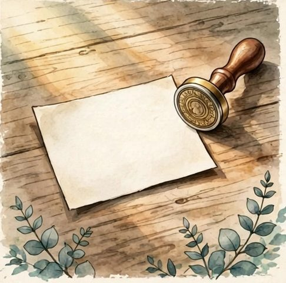
A permission slip, signed in one's own hand. The office that never existed stays closed.
Somewhere along the way, most people hand their permission slips to an office that does not exist. They wait to be allowed: to start the project, to take the afternoon, to write the letter, to leave the room. The office never writes back, because there is no office. There is only the habit of waiting, which can consume years with perfect politeness.
Self-issued permission is not rebellion. It is administration. The person who will live with the result signs the form, because the person who will live with the result is the only authority the form ever needed. This page holds that the signature is valid the moment it is made — not when it is witnessed, applauded, or understood by anyone else.
There are, of course, reasons that belong to other people: promises made, duties accepted, harm to avoid. Those are real, and later halls give them their full weight. But the default is the other way than most of us were taught. Permission begins at home, issued by the resident, for any reason the resident finds honest.
4No Committee Meets
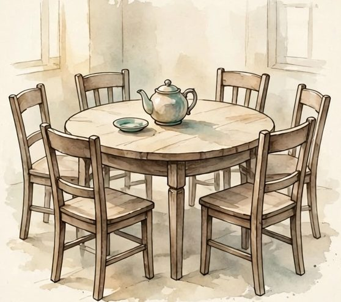
The committee table, at the hour it usually meets. It will wait.
Picture the committee that reviews your reasons. It has a long table, a pot of cooling tea, and strong opinions about timing. It asks whether the reason is big enough, whether the moment is right, whether people like you do things like this. It adjourns without a verdict, because adjourning is its whole function. The committee is not wicked. It is simply not real — and yet its meetings can postpone a life for decades.
The practice recommended here is not to argue with the committee. Argument keeps the meeting in session. The practice is to note, with respect, that no quorum is required. A reason carried by one honest person is a majority of the only electorate that matters for most of the doors in a life.
Some decisions genuinely need counsel — the large, the irreversible, the ones that spend other people's safety. Those get their counsel, gladly. But the small doors — begin, ask, rest, return — were never the committee's jurisdiction. Walk through them while the tea is still warm.
5Worthy Is Not a Requirement
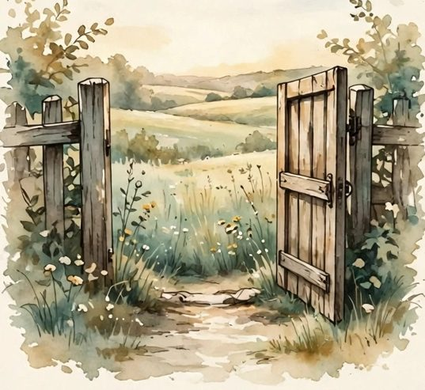
No guard, no inspection. The gate was never the point.
We inherit a ladder of reasons. At the top: noble reasons — duty, love, necessity, the rescue of something precious. At the bottom: the reasons we apologize for — whim, curiosity, restlessness, wanting a change of air. The ladder suggests that an act inherits the rank of its reason, and so we learn to promote our reasons before we dare to act, inflating small honest motives into grand ones for presentation.
This estate declines the ladder. Worthiness is a quality of judges, not of doors. A door opened to escape a fire and a door opened to smell the rain are both, simply, opened. The person who rests because they are noble about their limits and the person who rests because the hammock looked inviting arrive at the same rest, and the rest does them the same good.
Let it be recorded plainly: a reason may be small, private, unfashionable, or slightly absurd, and still be fully sufficient. The only disqualifying reasons are the false ones — the motive invented afterward to impress, or the one that hides a harm. Honesty is the requirement. Worthiness is not.
6The Reason Is the Key, Not the Lock
One key, turning easily. It was never the lock that mattered.
It is easy to confuse the two, because both are made of reasons. The lock says: you may not pass until your reason is approved. The key says: your reason, honestly held, is what passing is made of. Most of us were issued locks in childhood and told they were keys — explain yourself, justify yourself, earn the doorway. The explanation became the toll.
Under the standing rule of this page, the reason is carried, not surrendered. You do not hand it over at the threshold for inspection; you use it, the way a key is used, and it stays in your pocket afterward, still yours, still valid for the next door. Nobody stamps it. Nobody files it. It does not expire because a season changed or a stranger frowned.
This is why the principle is portable. Offices close, platforms change their terms, committees dissolve. A key travels. The person who knows their reason is the key can walk into new countries of work and rest and asking, and find — to their continuing surprise — that most doors were never locked at all, only unopened.
7Any Is a Wide Word
Doors of every size, all of them counted, none of them ranked.
The operative word in the principle is the smallest one: any. Not a good reason, not the right reason, not a reason that would satisfy an auditor — any reason. The word is doing deliberate work. It refuses to sort motives into the respectable and the shameful before action is allowed. It widens the doorway to the full width of an honest life.
Any includes the reasons people are embarrassed to say aloud: because I was lonely; because I wanted to be admired; because everyone else was asleep and the house was quiet; because I did not want the day to be only errands. These are not lesser fuel. Longitude was measured, cathedrals sketched, and reconciliations begun on motives no more elevated than these.
Hold the word wide and the world gets wider with it. Projects that waited for a dignified occasion start on undignified ones and turn out fine. Help that waited for a worthy recipient goes instead to the person actually standing there. Any is not the absence of standards. It is the presence of mercy toward the truth of why we move.
8Reasons Are Not Ranked Here
Signposts of many heights. Each points somewhere real.
In most houses there is an unspoken league table of reasons, and everyone at the table knows their standing. The reason of duty outranks the reason of pleasure; the reason of family outranks the reason of solitude; the reason of money outranks them all and is allowed to interrupt any meeting. The table is never published, which is how it keeps its power.
In these halls the table is published in order to be retired. Reasons are not ranked here. They are recorded — the desk keeps a fair register — but the register is alphabetical, not hierarchical. Because I promised sits beside because I felt like it, and neither entry is printed in a larger type.
This is not the claim that all reasons are equal in consequence. Some reasons move a life an inch; some move it a mile. The claim is narrower and stronger: rank is not a condition of entry. The inch-reasons and the mile-reasons use the same door, and the door does not ask which kind is passing through.
9The Quiet Radicalism of Enough
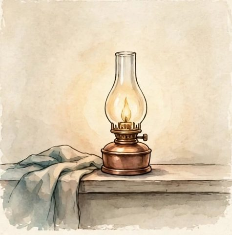
A small lamp in a quiet room. Nothing seized, nothing denounced — just enough, lit.
There is nothing loud about the principle, and that is its radicalism. It does not ask anyone to seize anything, denounce anyone, or become anyone else. It says, quietly, that the reason you already have is enough — enough to send the message, enough to start the page, enough to take the rest, enough to come back through the door you left by. Revolutions usually announce themselves. This one clears its throat.
Enough is a fighting word in a world organized around more. More justification, more credentials, more consensus, more time spent preparing to be permitted. Against that machinery, enough is almost offensively simple: the motive is present, the harm is absent, the door is there. Proceed.
People who adopt the principle rarely become reckless. They become, if anything, more deliberate — because when any reason counts, the honest work shifts to choosing reasons well, telling the truth about them, and standing behind the small ones without flinching. The drama moves from the doorway, where it never belonged, into the life itself, where it does.
10A Rule You Can Carry in a Pocket
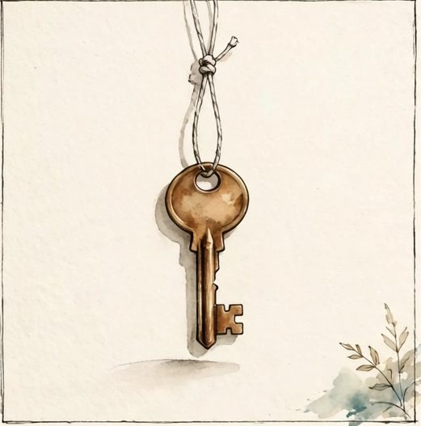
Small enough to carry. That was always the design requirement.
Grand principles need buildings. They require institutions to remember them, priests to interpret them, and anniversaries to refresh them. The principle of this page was designed to a stricter specification: it must fit in a pocket, survive travel, and work in the rain. It reduces, in the end, to one sentence a person can say standing at any threshold: my reason is enough, because it is mine and it is honest.
Pocket rules get used. The rule will be there at the unsent email, at the unworn good coat saved for an occasion that never qualifies, at the project folder named someday. It will be there at the hospital corridor and the border crossing and the kitchen at midnight. It does not need the halls, the desk, or this page. Those are commemoration. The rule itself is luggage-sized.
Carry it the way keys are carried — unremarked, daily, against the leg. And notice what changes: not the number of doors, which was always large, but the time spent standing in front of them. That time, returned in small coins over years, is a second life. Spend it on anything. For any reason.
11What “For Any Reason” Is Not
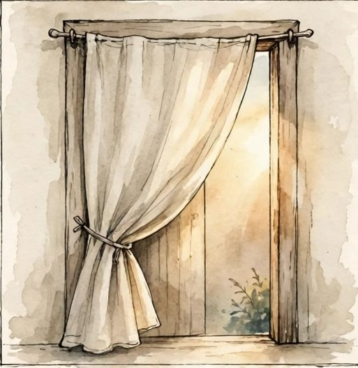
A curtain, not a wall. The principle has edges, and they are visible.
Honesty in fine matters requires a room for the exceptions, so here they are, early. For any reason does not mean for no reason at all: the principle honors motives, it does not abolish them. An act done in a fog, with no because available even privately, is not liberated by this page; it is simply unexamined, which is a different and sadder condition.
It does not mean reasons that spend other people. A reason that requires someone else's money, body, safety, or pledged word is not a key; it is a claim on another person's door, and their lock is theirs. The principle governs the doors of one's own life — which turn out, on inspection, to be nearly all the doors one actually needs.
And it is not a spell against consequences. Doors open both ways and weather comes through them. A reason can be sufficient and the outcome still hard; the principle promises entry, not applause. What it removes is only the preliminary hearing — the long standing in the corridor, rehearsing a worthiness that was never the actual price.
12The Door of the First Hall
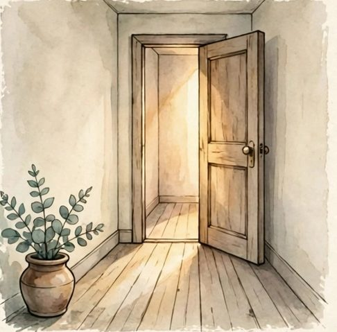
The first hall's door: plain wood, no inscription. It opens anyway.
Every hall in this estate ends at a door, and the door of the first hall is deliberately plain. No inscription, no knocker shaped like anything. You have read the principle in its first forms: the reason as key, the committee adjourned, the ladder retired, the word any held open like a hand. Nothing further is required to proceed, which is, the estate notes, precisely the point being made.
Beyond this door the principle gets smaller before it gets larger. The next hall is devoted to tiny reasons — the cup-of-tea reason, the Tuesday reason, the one almost too small to say aloud. This is by design. A principle that only works for large motives is a principle for rare occasions. The estate is interested in Tuesdays.
So the first hall closes the way it opened: with a door, standing open, for any reason. Walk through because the argument convinced you. Walk through because it did not, and you want to see the rest anyway. Both are recorded in the register with equal courtesy.
13The Cup-of-Tea Reason
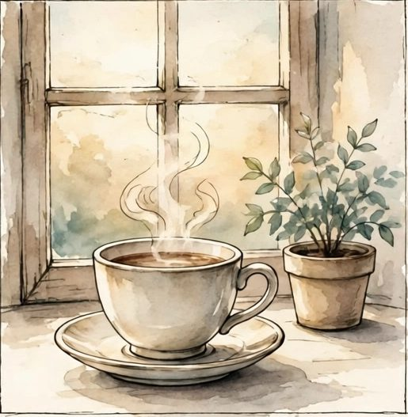
Steam, a window, the first hour. A reason this size starts more than it gets credit for.
A surprising amount of history has been decided by people who first made tea. The cup-of-tea reason is the smallest recognized unit of beginning: I will start after the tea; I will think while the tea cools; the letter gets written at the table where the tea is. It looks like delay and is actually a ramp — a gentle slope from the country of not-yet into the country of started.
Small reasons work because they ask nothing of courage. Nobody has to become a different person to make tea. The hands know the whole procedure, and while they perform it, the mind — unguarded, stirring — admits what it actually wants to do next. Many a life's work has entered through that unattended side door, announced only by a kettle.
So the estate honors the cup-of-tea reason in its register without irony. If a reason is needed to begin the letter, and the tea is that reason, then the tea is the reason, and the letter gets written. The register does not record the size of the key. It records that the door opened.
14Because It Is Tuesday
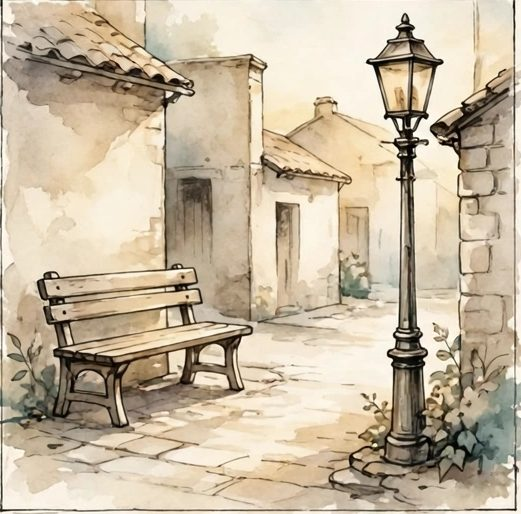
An ordinary morning, unremarkable in every way but one: it was enough.
Tuesday is the least decorated day of the week. Monday has its fresh starts, Friday its releases, the weekend its ceremonies. Tuesday just stands there, mid-field, holding nothing. And yet Tuesday reasons are among the strongest in the register, because they cannot borrow dignity from the calendar. To begin on a Tuesday is to begin without an occasion — proof that the reason was internal all along.
There is a superstition that beginnings need auspicious dates: the first of the month, the turn of the year, the birthday, the Monday. The superstition costs more than it pays. Every postponed beginning collects rent in the currency of self-respect, and the auspicious dates, when they arrive, find the beginner already tired from waiting.
Because it is Tuesday is therefore a complete and sufficient filing. It says: the day does not have to endorse the act; the act endorses the day. Many years later, asked when the change began, a person may answer honestly — a Tuesday, nothing special — and the nothing-special will sound, correctly, like the whole story.
15The Reason You Almost Didn't Say Out Loud
A note half-written at the desk's edge, in the margin where whispers live.
Every register has a marginalia: the reasons whispered, amended, or swallowed at the desk. The reason you almost didn't say out loud is usually the truest one in the room — the loneliness under the practical plan, the ambition under the modest proposal, the grief under the sudden energy. It was almost withheld because it felt too revealing to be load-bearing. It is, in fact, the only part of the structure that is.
This page does not require confession. The register accepts reasons in sealed envelopes; the desk has never opened one. What the principle asks is only internal honesty — that the person walking through the door knows which reason is actually in their hand, even if the spoken one is a polite decoy for company.
There is a test for finding it. When the stated reason is removed — suppose the practical benefit fails, suppose nobody ever knows — would the act still be wanted? What remains when the decoys are dismissed is the almost-unspoken reason, standing there in its plain clothes. Build on that one. It is stronger than it looks.
The Any-Reason Desk
One desk receives all correspondence for this house — questions, corrections, greetings, and reasons of any size. It is read in the order it arrives.
16Small Reasons, Real Weight
A feather and a stone, balanced. The scale does not grade its contents.
It is a persistent error to weigh reasons by their volume. Loud reasons — the crisis, the ultimatum, the once-in-a-lifetime chance — get weighed on the big scale, while the quiet ones are waved through unmeasured, as if they moved nothing. But anyone who has watched a life closely knows the tonnage is elsewhere: in the daily small reasons, repeated, that decide what a person actually does with their years.
A small reason, honored once, is an event. Honored daily, it is a character. The ten-minute reason, the one-page reason, the walk-around-the-block reason — these are the bricks of which the large visible structures are secretly made. The cathedral reason gets the photograph. The Tuesday reasons built the cathedral.
So weigh fairly. The reason to write one honest paragraph weighs little and is real weight. The reason to rest before collapse weighs little and carries the whole worker. Small is a description of size, not of significance, and the register of this estate files them in the same drawer, because the drawer was built by small reasons too.
17A Reason the Size of a Seed
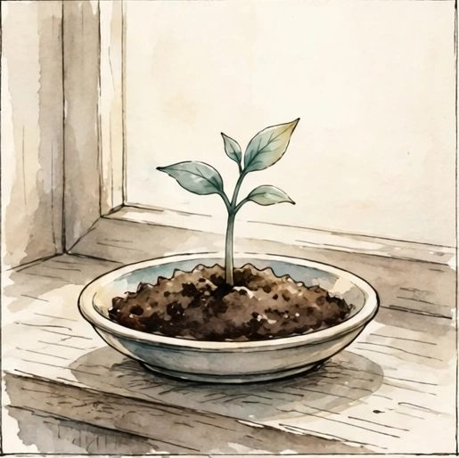
A seed in a saucer of soil. It is not a small tree; it is a complete instruction.
A seed is not a small tree. It is a complete instruction for a tree, written in a language of water and time. Reasons of seed size work the same way. The reason to learn three chords, to save the first small sum, to introduce yourself to one neighbor — none of these is a miniature of the final thing. Each is the final thing, encoded, waiting only for seasons.
The error is to judge the seed by the shadow it casts today, which is none. People step over seed reasons all their lives, scanning the horizon for a motive of impressive silhouette, while the actual future lies in the saucer by the window asking for almost nothing: a little water, a little patience, a windowsill of belief.
Plant it for any reason — because the packet was there, because the child asked, because your hands wanted soil. The register is not embarrassed by small plantings. Some entries in it, examined years later, turn out to have been forests filing their paperwork early.
18Because the Light Was Good
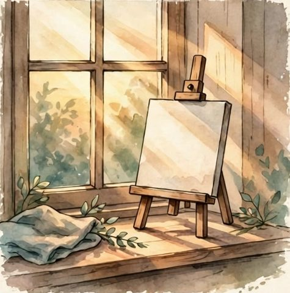
Late light across a windowsill, the kind that makes painters of everyone.
Painters are the licensed professionals of this reason, but it belongs to everyone. Because the light was good: the photograph taken, the walk extended, the letter written at the window instead of the desk, the apology finally made in a kitchen full of evening sun. It sounds like an aesthetic indulgence. It is actually a precision instrument — light is information about the hour, the season, and the heart's weather, all delivered at once.
Reasons of this kind are not decorations on the real motives; they are how real motives often announce themselves. The wish to begin rarely arrives wearing a badge. It arrives as a noticing — the light, the quiet, the sudden availability of the afternoon — and the person who has learned to honor noticings begins ten times as often as the person waiting for a summons.
So the register keeps a column for weather. Because the light was good is filed without a footnote, and the acts it powered — the portraits, the departures, the reconciliations — are not required to supply a heavier justification retroactively. The light was good. It was enough. It usually is.
19The Unimpressive Reason, Honored
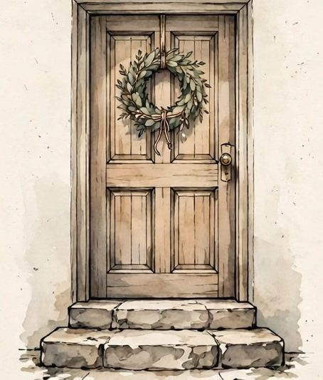
A plain door with a wreath on it. Honor is not reserved for the ornate.
Every life keeps a few reasons it would rather not put on the form. Because I wanted the afternoon off. Because I was showing off, a little. Because everyone else had one. Because I could not stand the sound of the argument anymore and leaving the room was the kindest available act. These reasons are usually edited out of the official biography and replaced with nobler understudies.
The estate proposes honoring them instead — not celebrating, honoring: entering them in the register in legible handwriting. An unimpressive reason, honestly owned, does less damage than a noble reason falsely claimed. The first keeps the accounts true. The second starts a ledger of debts the soul must service forever, defending a motive it never had.
There is also a gentleness in it. To honor the unimpressive reason is to make peace with the actual machinery of one's own life, which runs on mixed fuel and always has. The wreath on the plain door is not irony. It is the discovery that the door was worth decorating precisely because so much honest traffic passed through it.
20Reasons That Arrive Late
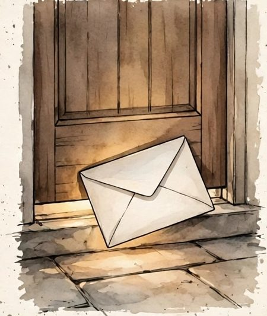
A letter under the door at dusk. Late is a time, not a verdict.
Some reasons miss their appointment. The reason to apologize arrives the year after the funeral. The reason to begin the work arrives at an age the brochures call wrong. The reason to leave arrives after the lease, the children, the decade. The standard treatment of late reasons is shame — to hide them, as proof of a defective character, in the drawer with the other evidence.
The register treats lateness differently: as a property of the mail, not of the motive. A reason that arrives late has still arrived, which distinguishes it from the reasons that never come at all and are mourned at leisure. The door it fits may have changed — the apology becomes a letter to the memory, the beginning becomes a beginning at a different scale — but doors are patient in a way that pride is not.
So enter the late reason with its true date, unedited. There is a particular freedom in a life that stops backdating its motives, and it sounds like this: I am starting now, for reasons that took their time. The garden planted late still shades someone. Sometimes it shades the planter, sitting under it, wondering why the shade was ever thought to require an early start.
21The Reason You Don't Have to Explain
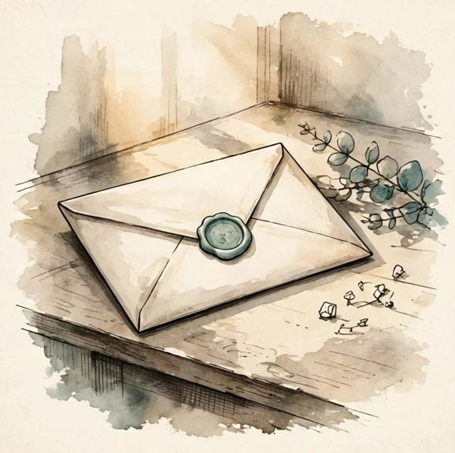
A sealed envelope on the desk. Its contents are in order; they are nobody's business.
There is a particular species of reason that never gets spoken at all, because its owner pre-emptively rules it inadmissible. It is not that the reason is secret. It is that the person has decided, on the door's behalf, that the door would not accept it. So it is carried silently for years — the wish to study, to move, to rest, to reconcile — like a letter never sent because the address was assumed to be wrong.
The assumption is almost never tested. Doors are more accepting than their reputations. The course accepts the late applicant more often than legend says; the friend accepts the apology; the body accepts the rest and asks why it took so long to be offered. The unexplained reason, finally used, tends to discover that the lock it feared was mostly rust of its own imagining.
No explanation is owed for most of the doors in a life, and this includes explanations to oneself. The reason may stay folded in the pocket, private as a prayer. What the principle asks is only that it be used — that the hand close around it and turn. A reason does not need an audience to be valid. It needs a door, and it has one.
22A Pocketful of Small Reasons
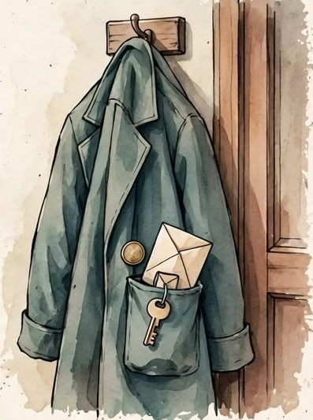
Ordinary objects, carried daily. The collection is the point.
No single reason in the pocket is impressive. A key, a coin, a folded intention, a small resolve saved from yesterday. But the estate has learned to respect the pocketful — the accumulation of small, usable motives a person carries into an ordinary day. Lives are not moved by the one perfect reason, delivered by courier at the perfect hour. They are moved by whatever is in the pocket when the door appears.
This is why the principle trains a habit rather than announcing an event: collect reasons the way one collects string and buttons in a kitchen drawer, without ceremony. Because the soup needed salt and the shop is by the park — a reason to walk. Because the song came on — a reason to call. Because the chair is already by the window — a reason to sit and think. Each is trivial. Together they are a transportation system.
The pocketful has one more virtue: it cannot be lost all at once. The grand single reason, when it collapses — the plan fails, the approval is withdrawn — leaves its owner stranded at the threshold. The pocketful loses a coin and walks on. Diversified motives are the estate's quiet insurance, and the premiums are absurdly small.
23When the Reason Is Only a Feeling
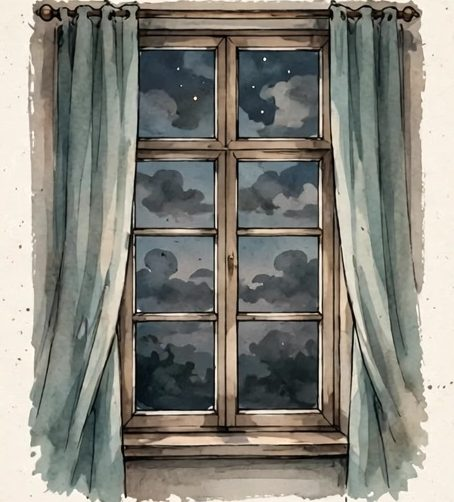
Weather at the window, evening. Feelings are forecasts, not orders — but they are still weather.
Sometimes the whole reason is a feeling, and the feeling will not produce documents. A heaviness that says leave. A lightness that says begin. A restlessness at the window that has no itinerary attached. The committee dislikes these filings — they arrive without evidence — and so most people learn to distrust the most continuous source of information they own.
Feelings are not orders, and this page does not crown them. A feeling can be weather from an old climate, a echo of somebody else's storm. But a feeling is always data: the instrument panel of the self, reporting in its native units. To honor it as a reason — to let it open the door to a walk, a question, a day of rest — is not to obey it forever. It is to read the panel before flying.
The register has a column for these, headed simply: weather. Entries there are short. Felt heavy; walked. Felt the pull; wrote the letter. Felt suddenly light; began. Years of such entries teach what no committee could: which feelings were fog and which were the first clear signal of the real sky.
24Small Is Not an Apology
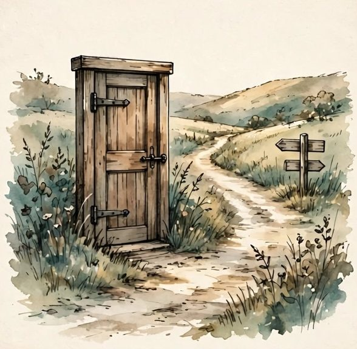
A small door with a straight back. It does not say sorry for its size.
Somewhere it was decided that a small reason must arrive apologizing — prefaced by sorry, this is silly, it's nothing, really. The apology is a toll paid to an imaginary inspector who believes size is dignity. But consider the physics of the thing: the apology takes longer than the reason. It costs more breath than the act. And it teaches everyone listening that their own small reasons should also be embarrassed, which is how whole households learn to starve their beginnings.
Small is not an apology. It is a measurement, and usually an inaccurate one — made early, before the consequences unfold. The small reason to plant becomes the tree; the small reason to write becomes the book; the small reason to rest becomes the health that everything else was supposedly for. Apologizing for the seed in the presence of the future forest is a category error.
So the second hall closes with a rule of speech: state the reason at its true size, without the bow. It is enough because I say it is enough — this sentence, said plainly, is the sound of a person whose paperwork is finally in order.
25Asking Is a Door Too
The door of asking stands in the same wall as all the others.
Of all the doors in a life, the asking door is the one most often approached and not knocked on. It is not heavier than the others. Its wood is not thicker. But behind it stands a person — a real one, with the power to say no — and so the corridor in front of this door is crowded with people rehearsing, revising, and quietly leaving, asks in their hands, year after year.
This hall treats asking as a craft with its own dignity. An ask is not a confession of failure. It is a piece of correspondence between two sovereignties: I have a reason, you have a door, let us see. The ask costs a moment of courage and returns information either way — which is more than the corridor ever returns.
And the standing rule applies here with special force. One does not need a certified emergency to ask. Help, time, a chance, an introduction, a second look — all of these may be requested for any reason, including the reason that the day is heavy and a hand would lighten it. The next rooms take the asks one at a time.
26Ask for Help, For Any Reason
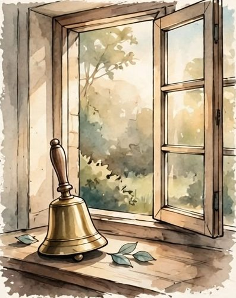
A bell, a window, a desk. Asking is mostly arranging to be heard.
Help is the ask people postpone longest, usually until the situation qualifies as an emergency — as if help were a fire service, only for flames. But most help is not rescue. It is a ladder borrowed, a paragraph read by fresher eyes, a ride, a recipe, an hour of someone else's strength applied to a stuck drawer. These small helps are wasted daily in enormous quantities, unoffered because unasked, unasked because the reason was not considered large enough.
For any reason is the whole qualification. Ask because the box is heavy. Ask because the form is confusing and a second mind would halve it. Ask because you are tired in a way that sleep has stopped fixing. None of these requires a tribunal. They require a sentence, spoken while the situation is still small enough for the help to be small too.
There is a timing mercy hidden here: asks made early are light for everyone. The asker is not yet desperate; the asked is not yet rescuing. The same help requested at the edge of collapse arrives as drama. Requested on a Tuesday, for a modest reason, it arrives as friendship — which is what it was, all along.
27Ask for Time
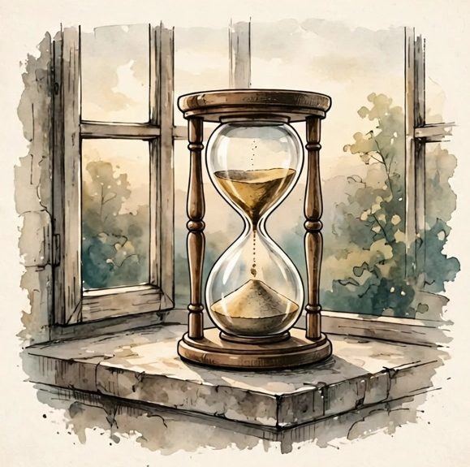
An hourglass asking politely for one more turning. Time requested is not time confessed.
Time is the ask disguised as a confession. More time, please — said to a deadline, a lover, a doctor, one's own plan — feels like admitting the original estimate was a lie. But the estimate was not a lie; it was a guess made by a younger self with less information. Asking for time is simply filing the corrected figures, which in every other department of life is called competence.
The standing rule democratizes this ask. Time may be requested for any reason: because the work deserves it, because the worker is depleted, because the season is wrong, because a parent is old, because the idea needs to ripen in the dark like anything else that grows. The reason does not change the amount of time that exists. It changes whether the time that exists gets used honestly or spent pretending.
Notice, too, who grants these asks most readily: almost everyone, when asked plainly and early. The mythology of refusal is larger than the fact of it. Most doors marked time open with an apology already forming on the other side — we were hoping someone would say something. The ask is a relief disguised as a request.
28Ask for a Second Chance
Two letters. The second one is not a confession; it is a new application.
A second chance is the ask with the heaviest folklore. We treat the first chance as a sacrament and the second as an embarrassment, as if lives were examinations with one sitting. But watch anything real being learned — an instrument, a language, a trade, forgiveness — and the sittings number in the thousands. The second chance is not the exception in a serious life. It is the mechanism.
The reason to grant oneself a second chance may be any reason: because the first attempt was made in ignorance, in grief, in haste, in youth. Because the world changed its terms. Because you changed yours. The register does not require the failure to be interesting or the fault to be someone else's. It requires only the honest sentence: I would like to try again, and here is why — why being whatever size it happens to be.
And for the one being asked: a second chance granted is rarely regretted at the distance of years. What people regret, reviewing the corridor of closed doors, is how many of them they kept shut out of tidiness. The door of the second chance is heavier than most. It still opens from either side.
29Ask Without a Case
A blank page where the brief was supposed to be. The ask is complete without it.
Somewhere we learned to arrive at every ask with a case: documentation, witnesses, a summary of damages. The case is meant to protect the asker from the shame of wanting something merely because they want it. But the apparatus has a cost — by the time the case is assembled, the moment has often passed, and the ask goes back into the drawer with all the other well-prepared nevermades.
Ask without a case. State the wish, state the reason at its true size, and stop. I would like an introduction because I admire her work. I would like the afternoon because the afternoon is beautiful and I am tired. These sentences are complete. They do not wobble. The person asked can still say no — the no is theirs — but the ask has finally been weighed on its own merits instead of its paperwork.
There is a dignity available here that the case-builders miss: the dignity of being refusable. A naked ask trusts the other person with a real choice. Asks armored in justification are, at bottom, attempts to make refusal impossible — which is to say, attempts to make the other person's yes worthless. Ask plainly. Let yes mean yes.
30The Ask You Keep Postponing
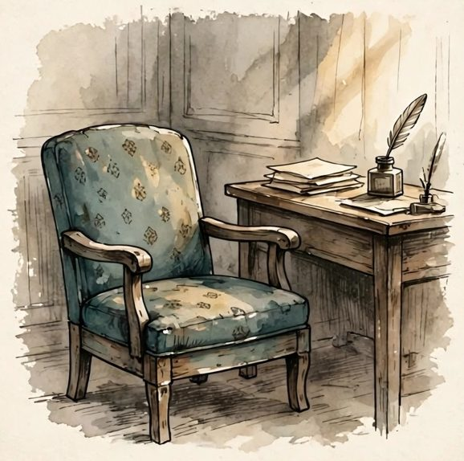
The heavy old chair by the desk — the ask that has become furniture.
Everyone keeps one: the ask that has been carried so long it has become furniture. The raise, the apology, the invitation, the forgiveness, the help with the thing that is quietly sinking. It is rehearsed in showers and on staircases. It has opening lines in several drafts. Its owner could deliver it flawlessly to an empty room, and does, regularly, instead of to the one occupied room that matters.
Postponement has a logic that deserves naming: every day the ask is not made, it cannot be refused. The postponement is not protecting the asker from the answer. It is protecting them from the end of hope's ambiguity — the pleasant corridor where the answer might be yes, forever, at the price of never knowing. The corridor charges rent, though, in a currency of attention, and the rent rises.
The estate's counsel is unfashionably direct: the ask you keep postponing is the most important one you own, precisely because you keep postponing it. Make it for any reason — because today is the day the corridor rent came due in your mind. The answer, whatever it is, will be smaller than the years of rehearsal. Answers usually are.
The Any-Reason Desk
One desk receives all correspondence for this house — questions, corrections, greetings, and reasons of any size. It is read in the order it arrives.
31Ask Small, Ask Early
A small knocker on a small door. It makes exactly as much sound as needed.
There is a craft to asking small. The cathedral-sized ask — total rescue, complete forgiveness, the whole future — frightens both parties and often fails under its own weight. The small ask travels: an hour, not a rescue; one introduction, not a network; a look at the draft, not a partnership. Small asks get answered while the asker is still in the room.
Asking early is the other half of the craft. The same request is a courtesy in October and a burden in the last week of December. Early asks respect the other person's calendar of strength; they arrive when the helping is easy and even pleasant. Late asks convert goodwill into emergency services, and then everyone agrees, wrongly, that asking is a heavy thing.
So the desk teaches the formula without embarrassment: small, early, plain. Knock with the small knocker. The door it fits is not a lesser door. It is the door that was actually built for daily use, used daily by people whose lives work — people who were once thought lucky, and were in fact simply willing to ask for a cup before they needed a well.
32Asking Is Not Owing
The ribbon is untied. Nothing is written down anywhere.
The fear under many unmade asks is accounting: if I ask, I will owe. The imagination produces a ledger in which every favor received is a debt entered in red, to be repaid with interest in some future season of obligation. Under that arithmetic, a proud person asks for nothing and calls the isolation integrity.
But help between people is not banking, and the ledger is a forgery. What is actually exchanged, when an ask is answered gladly, is not a debt but a thread — the knowledge of each other that both parties keep. The helped person knows who to call. The helper knows they can be called. Threads like these are the entire structure of a livable life, and they are woven by asking, not by repayment.
This is not a license to take without gratitude. Gratitude is real and the estate honors it in a later hall. The point here is narrower: the ask itself creates no debt. Ask as one who may someday be asked — which is to say, ask as a citizen of the same country, where the doors open both ways and the register records the traffic without pricing it.
33The Person Who Said Yes Before You Finished
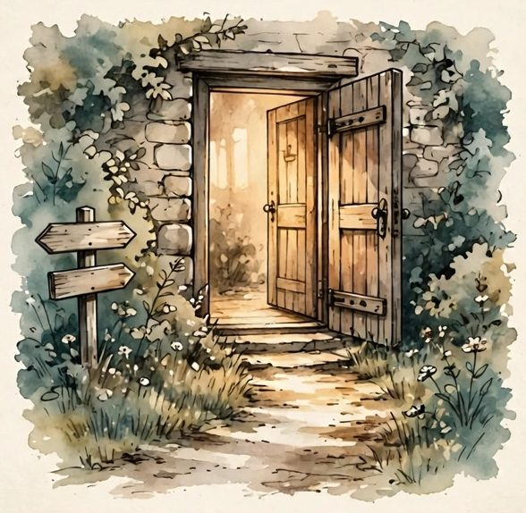
A door opened before the knock was finished. Some yeses arrive early.
Every life contains at least one of these luminous figures: the person who said yes before the sentence was finished. The ask was still assembling its courage in the doorway — the preamble, the apology, the case — and the answer was already there, interrupting with kindness. Yes. Of course. When? The experience rearranges the asker's whole theory of the world, usually permanently.
These people are not careless with their yeses. They simply run a different default. Where others hear a request as a cost being transferred, they hear it as information: someone trusts me with the truth of what they need. The yes is fast because the machinery of suspicion was never installed. The register notes, without envy, that such people also tend to ask freely — the two freedoms being the same freedom, facing opposite directions.
The rest of us can borrow the default for a day at a time. Say the yes at the speed it deserves. And on the asking side, aim more of your asks at the unfinished sentences of your life — bring them to the quick yeses and the slow ones alike, but bring them. The corridor is the only place asks are guaranteed to fail.
34Asking on Behalf of Someone Else
Two doors, side by side. Sometimes you knock for someone who cannot reach the knocker.
Some of the noblest asks in the register were made by proxy: the colleague who mentions your name in the room you cannot enter, the friend who asks the question you are too tangled to phrase, the parent still knocking on doors for a grown child who has stopped believing doors open. Asking on behalf of someone else is its own craft, with its own rule — carry their reason, not your theory of their reason.
It also rescues the principle from a certain loneliness. For any reason might sound like a doctrine for hermits, each with a private key. But reasons travel between people. I can hold your reason in trust while yours is lost; you can lend me your confidence that the door is worth knocking on, the way travelers lend each other light. The estate's doors are individual. Its corridors are shared.
So if your own reason has gone quiet — it happens; reasons have seasons — the standing offer of this hall is: borrow one. State the borrowed reason honestly, as borrowed. The door does not mind. Doors have been opened by borrowed keys since there were keys, and the register, which is wise in this, records the opening without an asterisk.
35When the Answer Is No, Gently
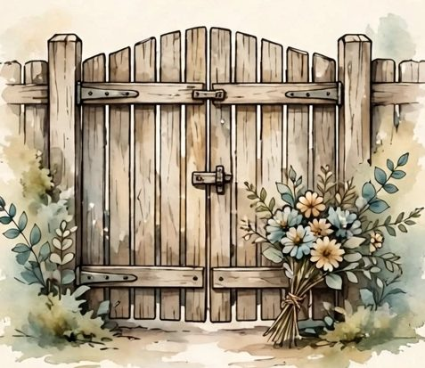
A gate closed, with flowers beside it. No is also a form of information.
Some asks are answered no, and this hall would be a fraud if it did not keep a room for that. The no arrives — plainly, or wrapped in regret, or disguised as silence — and the asker stands at the closed door with their reason still in hand, suddenly feeling the full embarrassment the committee always predicted. The first thing to record is that the embarrassment is survivable. It has a half-life of days. The corridor-years had a half-life of decades.
A gentle no is a real answer, and often a kind one: it returns the asker to their own resources while those resources are still adequate. The refusal that comes early and plainly is a gift compared to the yes that resents itself for a year. The estate teaches its citizens to hear the difference, and to thank the plain no the way one thanks a clear signpost — it is not the destination, but it is honest about the road.
And the reason? It remains in the register, unstruck. A refused ask does not invalidate the motive that made it. The same reason, carried to another door — there are more doors than any life has yet counted — may open a province. Reasons are not consumed by use. They are, if anything, strengthened by travel.
36Ask Again, For a New Reason
A letter returned to the desk, stamped once, and sent out again under a new date.
The archive contains a category of asks labeled: returned. Not refused forever — refused once, at a time when the asked was depleted, distracted, or guarding a boundary that has since moved. Lives change their answers the way gardens change their seasons, and the asker who understands this holds the register loosely: the no of one year is a fact about that year, not a law of nature.
Asking again requires a new reason, or at least a renewed one — this is the etiquette that separates persistence from pestering. The new reason can be modest: the situation has changed; I have changed; the ask itself has shrunk to fit your present strength. What it cannot be is the same pressure in a louder coat. Repetition is not a reason. Novelty is.
There is a deep courtesy in the returned ask done well. It says: I remembered your no, and I honored it, and I am asking now because the world is different — you are allowed to be different too. People melt for that more often than folklore suggests. The door that opens the second time often opens wider, because both parties now know it was a real door, with a real person keeping it.
37Begin Before You Feel Ready
The first stair. It does not ask where the staircase goes.
Readiness is the most successful postponement device ever built. It promises that a feeling will arrive — confidence, clarity, the sense of being fully equipped — and that when the feeling arrives, the beginning may proceed. The feeling, examined closely, turns out to be produced by beginning. It does not precede the act. It is the act's exhaust, mistaken for its fuel.
Begin before you feel ready, then, as a matter of engineering rather than bravery. The first paragraph teaches more than the month of preparation for it. The first customer, the first lesson, the first honest attempt — these generate the information that readiness was supposedly made of. To wait for readiness before beginning is to wait for the harvest before planting, in a tone of great reasonableness.
The standing rule contributes its usual mercy: the reason to begin now may be any reason. Because the light is good. Because it is Tuesday. Because the alternative is another year of the corridor. Begin unready, with the small reason in hand, and let readiness catch up at its own pace. It will. It was never leading; it only likes to be photographed in front.
38Begin Small, For Any Reason
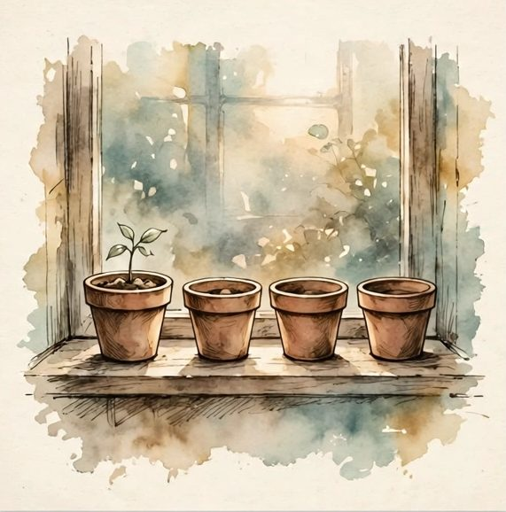
Seedlings in a row of small pots. Every row starts as one pot.
Beginning small is not beginning timidly. It is beginning at the scale where feedback is fast, failure is cheap, and the whole enterprise still fits in a life. The small beginning is how cathedrals actually start — with one stone that is really laid — as opposed to the grand beginning, which is usually a ceremony held to avoid laying anything.
For any reason is the charter of small beginnings. You do not need the master plan to plant the first pot. You need a reason for the pot, and the pot's reason can be entirely local: the windowsill was empty; the seeds were a gift; your hands wanted work. From the pot, the row. From the row, the garden. From the garden — the register holds entries that became orchards, and their first lines are all embarrassingly small.
There is also strategy in it, for the strategically minded: the small beginning cannot be argued with, because it asks so little of the future. It does not need the committee's five-year projection. It needs this week, this shelf, this paragraph. Begin small enough that the reason you already have is sufficient — and notice that this was the principle, wearing overalls.
39The First Page, the First Brick
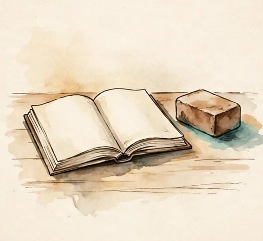
One blank page, one single brick. Everything large in this house began as these.
All large things in this estate are stored as two humble objects: a first page and a first brick. The first page is any beginning that can be written; the first brick is any beginning that can be lifted. Between them they cover the species. What they share is a property the brochures never mention: the first one is always slightly embarrassing. The page is clumsy. The brick is laid crooked. This is not a defect of the beginner. It is the physics of firsts.
The embarrassment does the damage, because we compare our first page to other people's bound volumes and our first brick to their finished walls. The comparison is rigged — their firsts are hidden in the walls, invisible, while ours are still wet. Every expert was once the person who laid the crooked brick and had to decide whether the wall would continue anyway. The wall is the decision.
So the desk keeps a sacrament for beginners, in whatever field: the first page gets written, the first brick gets laid, and both get entered in the register without apology or asterisk. The reason may be grand or trivial — the register does not ask. It asks only whether the page exists. Existence is the whole ceremony.
40Beginning Again Counts
The staircase from above, turned once already. Again is a direction, not a defeat.
The beginning again is harder than the beginning, and this hall refuses to pretend otherwise. The first attempt had innocence for fuel; the second must run on something sterner, because now the beginner knows exactly how the falling feels. Whole lives stall at this exact stair — not at the first beginning, which was easy, but at the second, which requires beginning with the memory of stopping.
And yet the register is unambiguous: beginning again counts, in full, without discount. The musician who returns after twenty years is not a failed musician filing an appeal. She is a beginner with twenty years of listening in her hands. The business begun again, the language, the friendship, the fitness of a body that has been ill — each second start is richer than the first, because it begins in knowledge. The only true discount is the one we apply to ourselves out of embarrassment.
The reason to begin again may be the oldest reason in the book or the newest one in the pocket. It does not need to explain the gap. The gap is not a debt on the ledger; it is weather the project survived. File the new beginning under today's date. The register has never once asked a returning citizen to account for the years. It asks what they are beginning.
41Begin Without Announcing
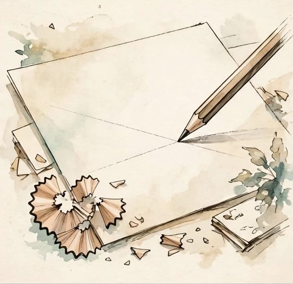
A line begun lightly. Pencil is the stationery of permission.
There is a case for the unannounced beginning — the project started in a drawer, the training begun before the telling, the manuscript nobody knows about. Announcement is a tax some beginnings cannot afford. It invites commentary before the work has roots, recruits an audience before there is anything to show, and creates a public account that the fragile first weeks must somehow service.
The quiet beginning runs on different fuel: privacy, and the small daily pleasure of a thing that is only yours. It does not need to defend its pace. It does not perform its commitment. Many durable works spent their first season this way, in the workshop with the door shut, growing the way mushrooms and cathedrals both grow — mostly out of sight.
The standing rule fits this room exactly. A beginning needs a reason, not a press release. Announce later, or never, or when the work itself asks to be introduced. The register of this estate accepts filings in sealed envelopes and backdates nothing. What matters is that the thing has begun. The world finds out in the work's own time, which is usually the right time.
42The Unfinished Drawer
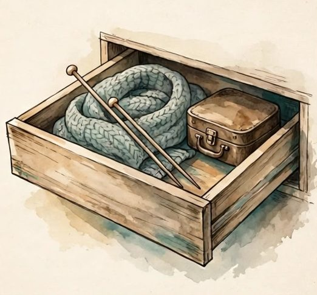
The drawer, open: a half-knitted scarf, an instrument in its case, all of it kept kindly.
In every house there is a drawer of unfinished things: the half-knitted scarf, the course at lesson four, the instrument in its case, the file named final-draft-two. The drawer is usually kept with a sense of indictment, as if each object were evidence in a prosecution of the owner's character. Visitors are not shown the drawer. The owner, if honest, visits it the way one visits a cemetery of intentions.
The estate proposes a different reading. The drawer is not a cemetery; it is a harbor. Unfinished things are not failed things — they are paused things, and the pause has many legitimate authors: the season changed, the money went elsewhere, the interest ripened into a different interest, the hands were needed for a funeral or a birth. The indictment assumes a life is a factory with one product line. It is, in fact, a harbor, with weather.
And the drawer has a door, like everything else here, and the door opens both ways. Things come out of it, years later, to be finished in an afternoon by hands that finally know how — or to be given away, completed by someone else, or released entirely, with thanks. A reason is all that any of those endings has ever required. The drawer is patient. Be as patient with its contents as it is.
43Begin at the Wrong Age
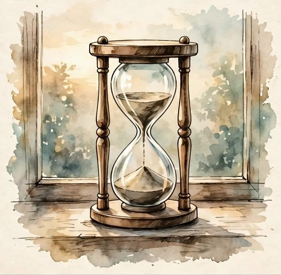
An hourglass at dawn. The sand does not consult the calendar of other people's lives.
Every beginning has a supposed age limit attached by folklore: too young to be taken seriously, too old to start, the window always described as closing just before the listener arrives. The folklore is remarkably consistent and remarkably useless — it has, at various times, forbidden beginners of every age from nine to ninety, which suggests the window it describes does not exist.
What exists is a sequence of trade-offs. The young beginner trades experience for time. The old beginner trades time for experience — and experience, it turns out, is a ferocious accelerant: the sixty-year-old learning the instrument learns it as a musician of life already, hearing in weeks what took the child years of fog. The register holds beginners of every decade, and their files are not sorted by age, because the work never asked.
So begin at the wrong age, for any reason. Begin because the wrongness itself is interesting. The only age that is truly wrong for beginning is the age at which one has agreed, finally and falsely, that beginning is finished. That age is not a number. It is a surrender, and it can be rescinded on a Tuesday.
44Begin Because Someone Else Did
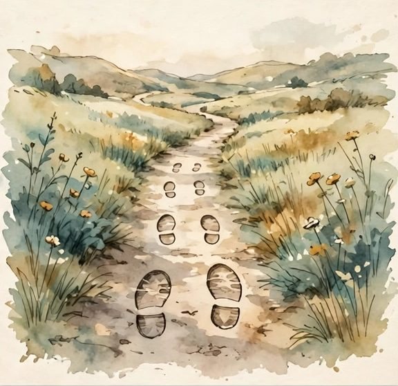
Two trails on one path, starting a few steps apart. Company is a reason too.
It is considered faintly shameful to begin because someone else did — as if motives must be minted in solitude to be legal tender. But imitation is one of the oldest doors in the world. The child begins the instrument because a cousin plays. The neighbor plants because the street has started planting. Entire golden ages are nothing but people beginning because the person at the next bench had begun, and the light from their lamp fell across the shared table.
The reason borrowed from another's courage is not counterfeit. It is how courage circulates. The first beginner in any group performs a public service out of proportion to their act: they lower the door's apparent height for everyone behind them. To begin because someone else did is to accept that service — and, by beginning, to extend it to whoever is watching you.
So the register records these without a blush: began because she began; started the week the old man down the street started his. If your reason needs a companion reason to stand up straight, let them walk together. Reasons are not weakened by company. They are, like walkers on a dark path, steadied by it.
45The Reason Restarts the Engine
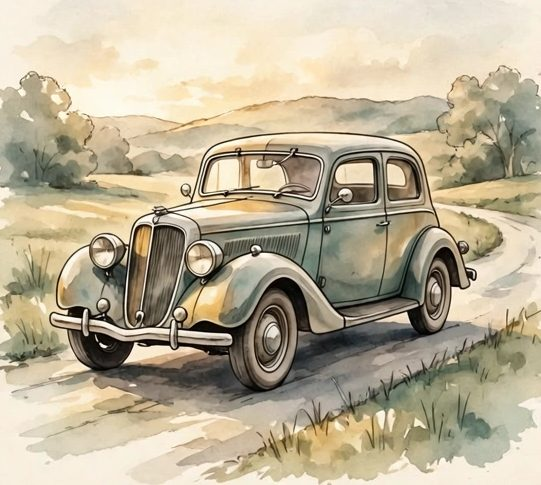
An old engine on a quiet road, turning over on the first try.
There is a moment familiar to everyone who has left a project and returned to it: the engine turns over on the first try, surprising its owner, who had prepared a speech about rust. The work was not dead. It was waiting — the notes still legible, the skill still in the hands, the old reason still warm under the dust like a coal in a banked fire. A small new reason, added on top, and the whole thing breathes again.
This is worth knowing in the seasons when everything feels stalled at once. Stalled is not the same as finished. Most engines of a life are not broken; they are banked — deliberately or by weather — with their fires low and their parts intact. The restarting rarely needs the enormous intervention we dread. It needs a reason of ordinary size and one honest hour.
The estate keeps its own engines this way and teaches the maintenance: touch the work occasionally, even in fallow years; leave notes for the person who will restart it, who is you, older; and never write the obituary of a living project just because the room has gone quiet. Quiet is a mode, not an ending. Reasons restart engines. That is, in the end, what reasons are for.
The Any-Reason Desk
One desk receives all correspondence for this house — questions, corrections, greetings, and reasons of any size. It is read in the order it arrives.
46Begin in Pencil
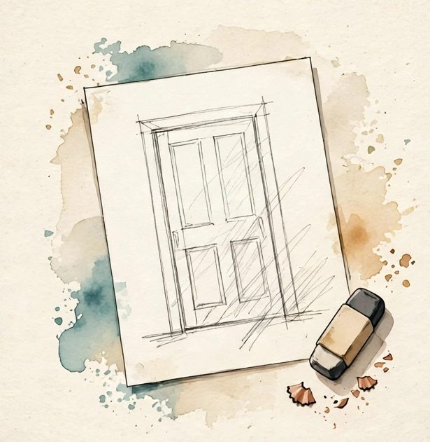
Shavings, a fresh page, a line that can be erased. Mercy is built into the tool.
The pencil is the most merciful of instruments, and this hall keeps a room in its honor. To begin in pencil is to build the right to revise into the first stroke — to say, before the world can say it: this is a draft of a beginning, and drafts are allowed to be wrong in interesting ways. The pen demands commitment. The pencil demands only honesty, and accepts payment in eraser dust.
Much of what stops beginnings is the fantasy that they must be executed in ink — that the first attempt at the business, the book, the language, will be entered in a permanent record and read aloud at the audit. Nothing is entered anywhere. The record of first attempts is kept by exactly one person, and she is generally kinder than the fantasy suggests, especially at a distance of years.
So begin in pencil, for any reason, and let the line be light. The light line can be strengthened once it is seen to go in the right direction — this is true of drawing and of nearly everything else. And if it goes wrong, the page keeps a ghost of it, faint under the new attempt. Artists call that pentimento and prize it. Beginners may call it the same.
47A Beginning Is Not a Promise
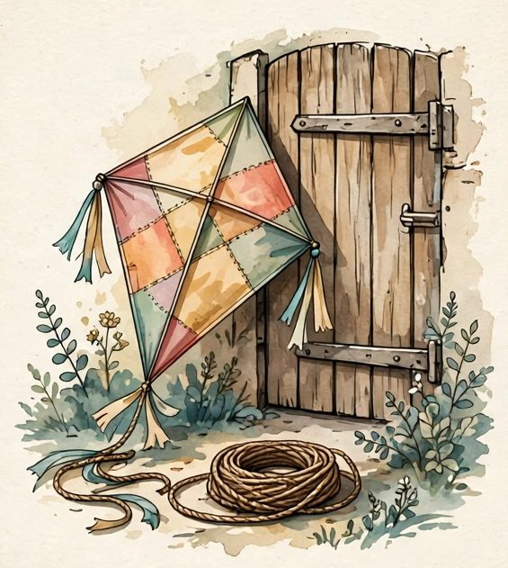
A kite against the door, not yet flown. It owes the sky nothing yet.
A beginning is not a promise, and confusing the two has strangled more projects than failure ever has. The promise says: I will finish, I will succeed, I will still want this in a year. The beginning says only: I am starting. The first is a contract with the future, written by someone who cannot know the future's terms. The second is an act in the present, which is the only tense anyone actually holds.
Under the standing rule, beginnings are filed without contracts attached. You may begin the language without promising fluency, begin the garden without promising harvests, begin the correspondence without promising it will heal anything. The reason covers the beginning. What the beginning later becomes — a practice, a season, a beautiful abandoned draft — will file its own paperwork in its own time.
This is not an excuse for flippancy. It is the condition of honesty. To promise outcomes is to lie a little, in advance, with good manners. To begin cleanly is to tell the truth at the only point where the truth is available. The register prefers beginnings that tell the truth. They age better, and their endings — finished or laid down — are filed without shame either way.
48The Door Marked Start
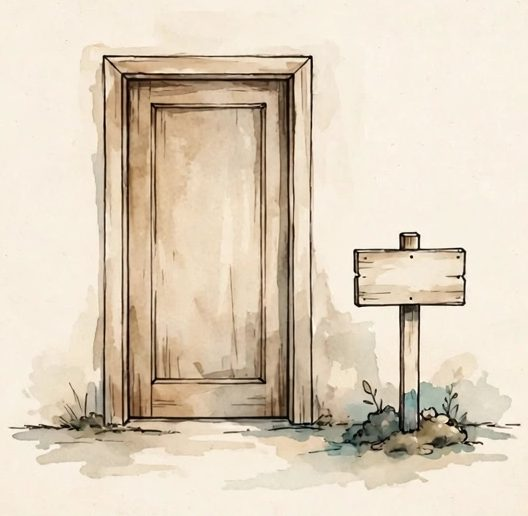
The plainest door in the house, with a small sign. No steps up, no toll window.
The door marked Start is the least ornate door in this estate, and deliberately so. No steps up to it, no toll window, no list of required documents carved in the lintel. It is a plain door with a handle worn smooth by everyone who ever decided that today, for whatever reason, was the day. The estate maintains it carefully and keeps its hinges oiled, because more lives pass through this door than through all the ceremonial gates combined.
First-time users are sometimes suspicious of its plainness. They look for the real entrance — the one with prerequisites. There isn't one. The plainness is the doctrine: beginning is a basic function of a life, like resting or asking, and it is priced accordingly, at one honest reason, payable in any denomination.
The hall of Beginning ends here, at the door it was always describing. Beyond it lie the rooms of rest and refusal — because the estate holds that the citizen who may begin for any reason must also be allowed to stop for any reason, and the symmetry is not decoration. It is the whole architecture. Walk through, or sit down on the step a while. Both are recorded with courtesy.
49Rest Needs No Excuse
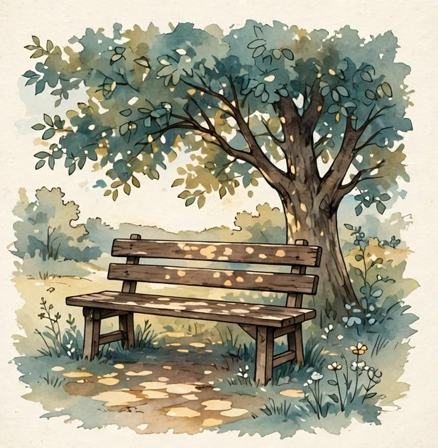
A bench, a tree, the middle of the day. Nothing is being avoided; something is being done.
Rest is the only necessity that is routinely required to produce a permission slip. Hunger eats without a hearing; thirst drinks; but rest — equally bodily, equally non-negotiable — is made to argue its case before an internal magistrate who asks what has been accomplished, whether it is enough, and whether other people are resting, and how much. The magistrate is never satisfied, because satisfaction is not his function. Delay is.
The estate's filing is simple: rest needs no excuse because rest is not an activity that competes with the work. It is half of the work — the half in which the body repairs the instrument and the mind, left uncommanded, files the week's loose papers and occasionally solves the problem that effort couldn't. To demand an excuse for rest is to demand that the night justify itself to the day.
So rest, for any reason, including the reason that the bench is in the sun and the hour is kind. The register keeps no column for what the rest produced. Some entries were followed by great works; some by more rest, also fine. The bench does not ask. The tree does not ask. Only the magistrate asks, and he is invited, respectfully, to sit down.
50Stop, For Any Reason
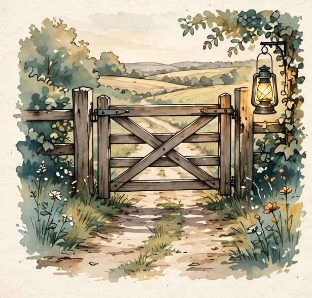
The gate is closed and the lantern is lit. Stopping can be a form of hospitality to oneself.
Stopping is treated, in most accounting, as a failure of continuing — as if motion were the default virtue and stillness required an alibi. But anyone who has driven in mountains knows the other truth: the stop is a skill. The driver who cannot stop cannot really be said to be driving. Stopping, for any reason — the view, the weather, the sudden clarity that this road is wrong — is not the interruption of the journey. It is the journey, exercising its judgment.
There are stops of many kinds and the register grades none of them. The stop to rest, the stop to look, the stop to abandon the vehicle entirely and walk home by a better path. Each is filed under the same unembarrassed heading. What the register does record, in a separate column, is the stops that were needed and not taken — visible later as breakdowns, blowouts, and the long repairs that a timely hour on the shoulder would have prevented.
So practice the stop while it is still a choice. Pull in for the panorama. Pull in because the engine sounds wrong. Pull in because you are, in the oldest sense of the word, tired of the road today. The road keeps. It is more patient than the traveler, and it will be there, entirely unjudging, at whatever hour the journey resumes — or at the news that it won't, which is also an arrival.
51The Dignity of No
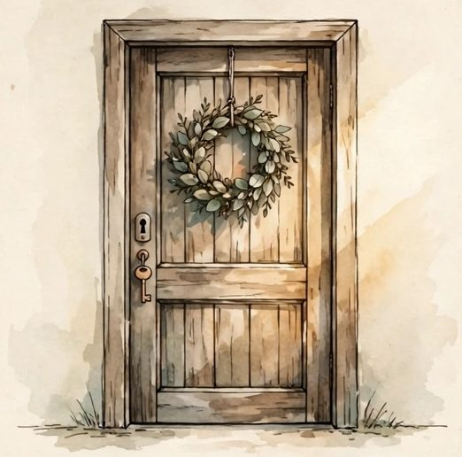
A closed door, calm and final. No is a complete sentence here.
No is the shortest complete sentence in the language of self-government, and the one whose pronunciation costs the most practice. It is not No, unless; not No, because — at least not at first. It is the door closed by the person whose door it is, and its dignity lies exactly in its brevity: a reason may follow, as courtesy, but the no does not stand on the reason. The reason stands behind the no, as a friend stands behind, not underneath as a crutch.
Whole industries of persuasion exist to make no feel ill-mannered. The follow-up question, the limited offer, the hurt tone — each is a small lever designed to pry the door back open a centimeter, then a hand's width, then entirely. Against these, the estate teaches the plain form: no, said kindly, said once, said without a brief. Kindness is in the tone. Finality is in the period at the end.
And the dignity runs both ways, which is the part folklore omits. A person whose no is solid can be trusted with a yes. Their yes means something in the world — it was not extracted, it survived the availability of refusal. The register honors the no of its citizens as the load-bearing wall of all their yeses. Protect it accordingly.
52Refusing Without a Brief
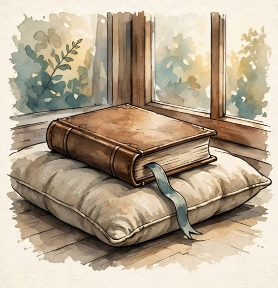
A book closed and set aside, marker in place. It can be opened again; that is not the point.
The refusal that arrives with a twenty-page brief is, paradoxically, the weakest kind — it invites appeal. Every argument in the brief is a handle the other party can pull: dispute this premise, answer that charge, and the refusal becomes a negotiation with a agenda. The refusal without a brief offers no handles. It is a closed door, well-made, with the light on inside — clearly a decision, clearly not a seminar.
This is not a counsel of rudeness. The brief-less refusal can be warm: I can't; I won't be able to; no, but thank you for asking. Warmth is about temperature, not documentation. What is withheld is the audit trail — the itemized account of one's hours, energy, and history that we are trained to surrender whenever we decline, as if declining were a transaction requiring receipts.
Keep the receipts. A life that must document every refusal spends its evenings doing paperwork for doors it never opened. The register of this estate accepts refusals in their shortest form and files them without a supporting statement, because the citizen's no, like the citizen's reason, is self-issued — and the office that would review it, the reader may recall, does not exist.
53Tired Is a Reason
A hammock, empty, in good light. The argument for it has already been made by the body.
Tired is a reason. It does not become one when the tiredness is spectacular — the collapse, the doctor's note, the witnesses. It is a reason in its ordinary Tuesday form: the eyes are heavy, the thoughts are slow, the work is coming out wrong in a way that more effort will only make wronger. The body's report is complete at that point. Demanding further documentation is not rigor; it is cruelty with a clipboard.
Consider how the report is treated in every other domain. When the instrument reads empty, the pilot does not debate the gauge's worthiness to be believed. The gauge is the gauge. Tiredness is the body's gauge for a fuel that has no other meter, and the person who overrides it habitually will be educated, eventually, by the engine's refusal to be overridden further.
So the estate's rule is a mercy and an efficiency at once: at tired, stop — for the reason of tired, which needs no co-signer. Rest taken at the first signal is short and sweet. Rest taken at the last signal is long and bitter and gets called other names: recovery, convalescence, the lost season. The hammock is cheaper than the hospital. This is not philosophy. It is accounting, and the numbers are not close.
54The Pause That Saves the Work
A bench partway up the long hill, placed exactly where the wall is.
There is a moment in long work — the wall everyone who has run a distance knows — when continuing feels obligatory and stopping feels like surrender, and the actual physics of the situation is simpler than either feeling: the pause, here, is what makes the rest of the distance possible. The work is not being abandoned. It is being carried across its hardest section by the only vehicle that can cross it, which is a rested worker.
Pauses have a public-relations problem. They look, from outside and often from inside, like nothing happening. The mythology of the unbroken effort is strong — the all-night forge, the unpaused campaign — and its survivors are conspicuously silent about the collapses edited out of the story. The register, which keeps honest books, records the pauses of its citizens in the same ink as the efforts. In the long accounts, they alternate like breathing, which is what they are.
So build the pause into the work the way rests are built into music — not as apologies between the notes, but as part of the composition that makes the notes intelligible. A project that cannot survive its maker's rest was not a project; it was a hostage situation. Stop for any reason. The work, if it is real work, will be there when the breathing resumes, improved in the specific way that only unattended problems improve.
55Quitting a Small Thing Well
A small boat, brought in and tied up properly. Small endings deserve seamanship too.
Quitting is usually discussed at the scale of marriages and careers, but most quitting is small: the club, the course, the committee, the subscription, the instrument in the case. Small quittings are done badly by almost everyone — by ghosting, by fading, by letting the thing die of neglect in a corner and then feeling accused by its ghost. The estate proposes that small things deserve to be quit well: promptly, politely, and completely.
Done well, a small quitting is a tiny ceremony of self-knowledge. It says: I tried this, I learned what it is, and it is not mine — a sentence that contains no failure at all, only information expensively and honorably obtained. The badly quit thing, by contrast, keeps sending invoices of guilt for years, because it was never actually ended, only abandoned mid-sentence.
And the reason for quitting small may be any reason, at its true size: the hour is wrong, the company is wrong, the interest has moved like weather moves. Announce it kindly, return the borrowed equipment, thank the teacher, close the account. The register files these under completed — because a thing quit cleanly is complete, in the only sense that ever mattered: its owner is free, and knows exactly why.
56Rest Is Also a Direction
A path that forks toward shade. Rest is also a way of going somewhere.
Rest is usually drawn on the map as a blank — the space between destinations, off the route. But anyone who has actually crossed a hard country knows the shaded grove is a destination: chosen, traveled toward, arrived at with relief. The traveler who rests is not between journeys. Rest is the part of the journey that happens in one place, and it has its own scenery for those who stay long enough to see it.
This matters because the blank-space theory makes rest feel stolen — snatched from the real itinerary, to be repaid with speed later. The grove theory makes rest a legitimate leg of the trip, planned without guilt and left without debt. Whole philosophies of travel divide on exactly this point, and so do whole lives. The register's map, the reader will not be surprised to learn, marks the groves in the same ink as the cities.
There is a further discovery available in the grove, and it is the one the driven most resist: some of the journey's most important events only occur at rest. The thought that would not come at the desk comes under the tree. The feeling that was outrun for months catches up, and turns out to be carrying a message rather than a threat. Direction is found in both places — on the path, and off it. The estate keeps both in repair.
57Saying No to Protect a Yes
A garden gate closed gently, so the garden inside it can grow.
Every yes spends the same currency as every no protects: the finite hours of a life. This is the arithmetic beneath the etiquette. The person who cannot refuse the committee, the extra project, the fifth obligation, is not being generous — they are spending, on other people's priorities, the hours in which their own deepest yes was supposed to happen. The yes then arrives at its season underfunded, and everyone calls it a tragedy of timing. It was a tragedy of refusal.
Saying no to protect a yes is the advanced form of the art, and it has a recognizable sound: it is prompt, it is kind, and it is curiously free of the guilt-performance that amateur nos require. The practitioner knows what the no is for. It is not against anyone. It is a fence around a garden that has not yet been seen by its defender in bloom — the book, the child, the health, the great quiet project — and the fence is the reason the garden exists.
The standing rule assists: the no needs no brief, and the yes it protects needs no announcement. Both can be entirely private — the fence built in silence, the garden growing in the silence inside it. Years later, when the thing finally shows itself, the world will call it sudden. The register will know better. It has the receipts: a hundred small nos, each protecting the same yes, each sufficient.
58The Empty Afternoon, Defended
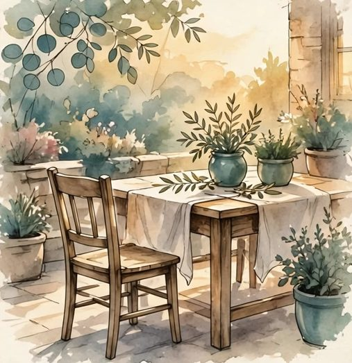
A chair at a set table, afternoon sun, nobody expected. The emptiness is the event.
The empty afternoon is the most contested territory in a modern life. It appears — unscheduled, unmonetized, glowing faintly — and within minutes the mind's brokers arrive with proposals: errands, optimizations, content, news. An afternoon defended against all brokers is a rare and slightly scandalous achievement, like a field left unbuilt in a booming city. Passersby cannot help suggesting what it could become.
The defense rests on a claim the brokers cannot process: the emptiness is the use. An afternoon in which nothing is extracted, produced, or improved is not a failed afternoon; it is the control group of a life — the baseline quiet against which all the striving is measured, and without which the striving loses its meaning entirely. People who lose access to empty afternoons do not become more productive. They become unable to tell what the productivity is for.
So defend one, for any reason — or rather, notice that defense implies an attacker with standing, and grant the brokers none. The chair in the sun requires no permit. The afternoon was always yours; the brokers merely learned to knock. Let them knock. Inside the defended afternoon there is a person doing the oldest human activity on record: sitting, in the light, being a creature rather than a function.
59Refusal Is Information
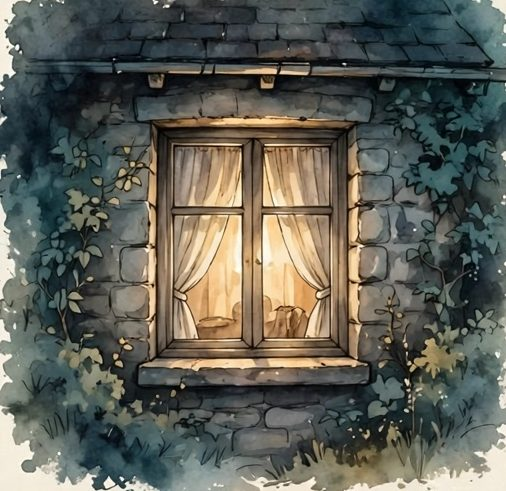
Warm light in a closed window. The room is occupied. The answer is the information.
A refusal is information, and often the clearest information a situation ever produces. Before the refusal, everything is speculation — maybe the door opens, maybe the funding exists, maybe the feeling is mutual. After it, the world has a definite shape, and definite shapes can be navigated. The person who learns to read refusals as data rather than verdicts recovers from them at a completely different speed.
This is true in both directions. The refusal received tells you where the road is not — valuable cartography, cheaply bought. And the refusal given tells you something about your own interior borders, if you listen: which no came out reluctantly, which came out like a held breath finally released. The register recommends attention to the second kind. A no that arrives with relief attached is a message from deep in the administration, and it usually concerns more than the immediate question.
None of this requires enjoying refusal. It requires only declining to waste it. The door that closes, examined honestly, points at the corridor — at the other doors, the whole unexamined row of them. People who treat no as information develop a recognizable gait: they recover their balance mid-stride, already looking at the next handle. It is not optimism. It is literacy.
60The Closed Door, Kindly
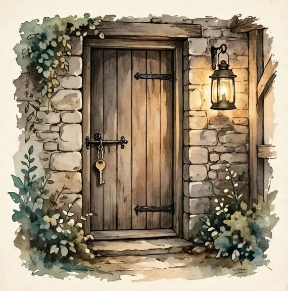
A closed door with a lamp beside it. Closed is not the same as locked against you.
The hall of refusal ends, as every hall here ends, at a door — in this case, a closed one, and the estate asks the visitor to look at it a moment without reaching for the handle. A closed door, kindly kept, is a beautiful piece of information architecture. It says: a person lives here, the person is not available, the unavailability is not a mystery to be solved or a wall to be scaled. It is simply the shape of the boundary, offered plainly, the way a shoreline offers the shape of the land.
There is an art to being the person outside such a door, too — the art of not knocking twice, of receiving the closure as complete. The estate teaches both sides because its citizens will stand on both sides, often in the same week. The kindness of the closed door is mutual: it costs the keeper a clear no, and it saves the visitor a year of maybe.
And for the keeper, one last note from the register, to be read in the quiet behind the door: the closure is not the opposite of the principle that fills this page. The same rule that opens every door for any reason guarantees that a door may also remain shut for any reason. The lock and the key were always the same small object, held in the same hand. Rest well behind it. The hall is done; the corridor continues, for those who continue, to the doors that open both ways.
The Any-Reason Desk
One desk receives all correspondence for this house — questions, corrections, greetings, and reasons of any size. It is read in the order it arrives.
61Doors That Open Both Ways
Both leaves open. The hinges were oiled from the start.
Most doors in the imagination swing one way. You go through, and the click behind you has a finality in it — the sound of a chapter locking. This hall begins by replacing that door with a better piece of carpentry: the door that opens both ways, the saloon door of the old inns, designed for traffic in both directions and incapable of the dramatic slam. It is less cinematic. It is considerably more truthful.
Leaving and returning are not opposites in a life; they are phases of the same circulation, like the tide that no one accuses of indecision. The person who leaves a place, a work, a version of themselves, is not renouncing it forever. They are going where the season points. And the person who returns is not retreating. They are completing the circuit, carrying whatever the far side had to teach.
The estate builds its halls with two-way doors on principle. Citizens depart for any reason and are received back for any reason, and the register records both movements in the same hand, without editorial comment. What follows is an exploration of the traffic: how to leave well, how to keep the way back, and how to come home without treating the journey as an error that needs explaining.
62Leave, For Any Reason
The path out, at the hour when leaving is easiest to see clearly.
Leave, for any reason. The sentence is short because the resistance to it is enormous and wears a hundred costumes: obligation, sunk cost, the opinion of the corridor, the fear that leaving will be read as verdict on those who stay. Under all the costumes stands one plain fact — people may go. From the room, the job, the city, the conversation, the version of the story in which they no longer fit. Going is a basic function, like beginning and resting, and it is priced the same: one honest reason.
The costs of not leaving, unlike the costs of leaving, are rarely dramatized, because they arrive as weather rather than events. Years in the wrong place do not announce themselves as an injury; they accumulate as a climate — the dimming of appetite, the shortening of the future tense. The register has read many files that end with the same sentence in different hands: I knew in the first year. The first year is worth listening to. It has the best information and the least investment in lying.
So this room's doctrine is a permission with a steady voice. You may leave when the reason ripens — and reasons for leaving ripen at their own pace, like fruit, not like deadlines. When it is ripe, go cleanly, as the next rooms describe. The door was built for this. It will not be offended. Doors never are; only people perform offense on their behalf, and they too, given time, usually forgive the door.
63Leaving Without Burning the Bridge
The bridge behind the traveler, intact, its lamps still lit for whoever crosses next.
There is a way of leaving that poisons the map: the scorched departure, the letter that says everything, the door slammed to be heard in three counties. It feels like honesty and is usually just arson with good diction. The estate discourages it for a practical reason, not a moral one: you cannot know which bridges your future self will need, and that self is a stranger whose errands you should not sabotage. Burn nothing you might want to cross in the rain.
Leaving well is quieter. It settles accounts, returns keys with thanks, says the true sentence at its true size — I am going; it is time; I have valued this — and declines to append the catalog of grievances, which would not be believed anyway and would only be rehearsed. The catalog can be written, if it must be, in a private notebook, where grievances traditionally go to become literature or compost.
What surprises people is how the well-left place responds. Doors left intact have a way of being opened to you later, in changed seasons, by changed hands. The corridor remembers the manner of your leaving long after it forgets the fact of it. Leave as a citizen, not as a weather event, and the whole map stays traversable — which, over a long life, turns out to be worth more than any single satisfying slam.
64The Return Ticket You Keep
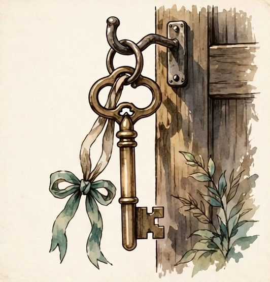
A key on a long ribbon, hanging where it always hangs.
Some leavings should keep their instrument of return close: the key kept on its hook, the number not deleted, the friendship maintained at low flame across the years of distance. The return ticket — literal or not — is the leaver's acknowledgment that the future is not fully visible from the platform, and that today's certainty of never is a forecast, not a fact. Forecasts in this estate are filed in pencil.
Keeping the ticket is not indecision. It is the opposite: a decision made by someone who understands that they are deciding for a future self whose reasons they cannot yet hear. That self may never use the ticket. The ticket's value is not in the using; it is in the peace of the departure itself — the difference between leaving a room and being exiled from it, which the nervous system registers even when the itinerary is identical.
There are tickets not to keep: the ones whose price is a standing humiliation, the doors whose keepers require you to shrink to fit them. Burn those — the estate's earlier advice has its exceptions, and this is the sanctioned one. But the ordinary ticket, to the ordinary place, among ordinary people: keep it in the drawer with the string and the buttons. It weighs nothing. It may someday weigh everything.
65Come Back, For Any Reason
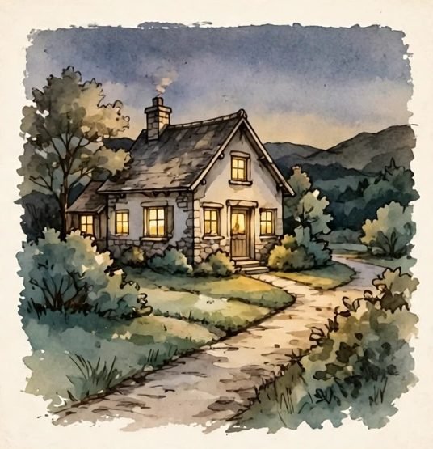
The same house, the path coming back, evening. It never stopped being the way home.
Come back, for any reason. If leaving needed a defense in the earlier rooms, returning needs a rescue — because the mythology is crueler here. The leaver is a protagonist; the returner is cast, in the cheap version of the story, as a failure crawling home. The register rejects the casting entirely. Returning is leaving's twin act, entitled to the same plain dignity: a person, a reason, a door.
The reasons to return are as various as the reasons to go: the work finished, the money gone, the lesson learned, the parent aged, the heart simply turned like a plant turning. Among them the register holds one in special tenderness — because I missed it — which folklore treats as the weakest reason and experience treats as one of the strongest forces in the world. Missing is information of the highest grade. It tells you where the weight actually is.
So the door of return stands without a questionnaire beside it. No accounting of the years away will be demanded at this threshold; no apology for the departure will be extracted. The house style is brief: you went, you are back, the kettle works. Whatever the journey was, it is now part of the citizen's equipment, and the estate, which values equipment, enters it in the register as an asset.
66Returning Is Not Losing
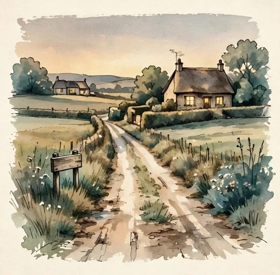
The road home at dusk. No scoreboard stands beside it.
The fear that keeps people from returning is rarely the door itself. It is the scoreboard — the imagined ledger in which leaving was entered as a wager: if the far place succeeds, the leaving wins; if the person returns, the leaving loses, and the loss is public. Under this bookkeeping, people remain in failed exiles for decades rather than record the loss, paying interest on a debt that exists only in the bookkeeping.
Close the book. A life is not a wager with a single settlement date. Leaving was a decision made with the information of its year, and it earned whatever it earned — wages, weather, wisdom, scars. Returning is a new decision, made with better information, and it is judged on its own prospects, not as a refund claim on the old one. The register does not net the two against each other. It records them in sequence, like seasons, which is what they were.
There is a proverb the estate keeps over this door, contributed by a returned citizen: nobody who comes home is the person who left, so the homecoming cannot be a repetition — it is a first arrival wearing familiar clothes. Treat it that way. The place has also changed in your absence, in ways you will spend a happy season discovering. Two strangers, meeting again, with a shared address: that is not losing. That is a beginning with unusually good material.
67The Room Kept as You Left It
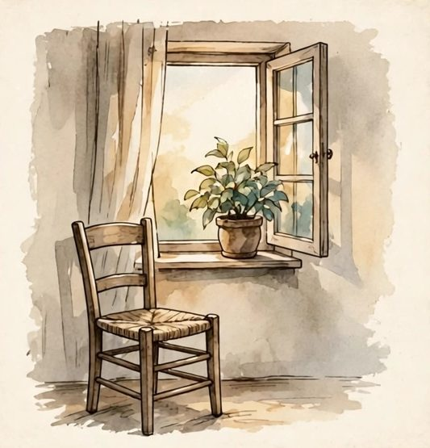
A chair, a window, a plant that someone watered. Keeping a room is a form of love with a long fuse.
Sometimes a place keeps faith with the absent: the room kept as you left it, the chair by the window, the plant surrendered to a neighbor's conscience and actually watered. It is not always possible — life reuses rooms the way rivers reuse banks — but where it happens, it is one of the quiet wonders of the world, and the returned citizen who finds it should understand what they are looking at: love, expressed as storage.
The kept room says something no letter could carry as well: your place in the pattern was not deleted. The years of your absence were lived here too, in your non-arrival, in the chair's continuing emptiness at the table. This is not an accusation. It is the physical form of a standing invitation, and standing invitations are the estate's favorite kind of architecture.
And if the room is not kept — if the chair is gone and the window looks onto a new fence — the principle covers that too. The room was never the point. The point is the threshold, and thresholds survive renovations. What returns is the person; what they return to is a relationship, which lives in people and not in furniture. The furniture was only ever its kindest metaphor.
68Leave a Place Better, or Just Leave
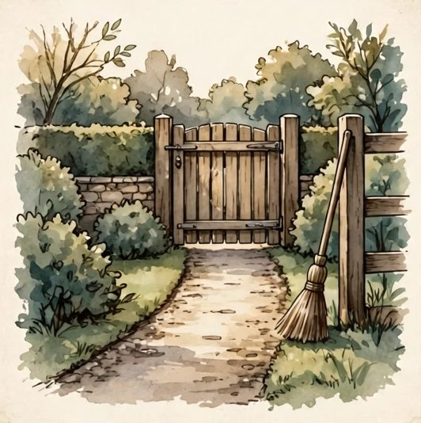
A swept path and a tidy gate. Gratitude, expressed as maintenance.
There are two schools of departure. The first holds that a place you are leaving deserves your remaining effort: settle the accounts, mend the fence you noticed was broken, leave the instructions for the boiler and the name of the good plumber. The second holds that leaving means leaving — that effort spent on the exit is effort stolen from the entrance, and the place can keep its own fences.
The estate, with respect, enrolls in the first school, for reasons that are partly selfish. A place left better is a place whose door stays calibrated for your possible return — but more than that, leaving well is practice for arriving well. The hands that mend the last fence are the same hands that will plant the first garden. Character does not change its clothes between the exit and the entrance; it wears one suit for both journeys.
But the room's title holds the honest alternative, and the register means it: or just leave. There are places whose fences are not yours to mend, departures that are escapes, and seasons when all remaining strength is needed for the road itself. Leaving a place better is a virtue. Leaving it at all is the necessity. The estate blesses the virtue and excuses the necessity, and keeps the two entries in different columns, as it has learned to do.
69Homesickness for a Place You Chose to Leave
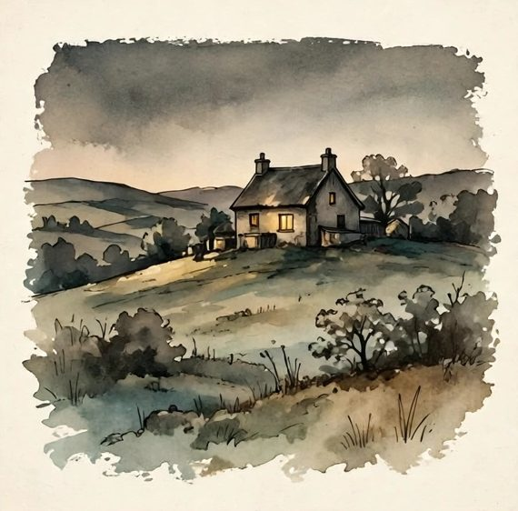
A window in the left-behind house, still lit in the memory's evening.
It arrives without regard for logic: homesickness for the place you chose to leave — the place you may have been right to leave, the place whose leaving improved everything measurable. The sickness does not argue with the decision. It simply reports, in the oldest language there is, that a part of the heart is still resident at the old address and has not been informed of the move.
Treat the report as weather, not as verdict. Homesickness is not evidence that the leaving was wrong, any more than missing a person is evidence that the parting was. It is the tax that attachment levies on change, and it is paid by exactly the people whose attachments are real. The ones who feel nothing at a threshold are not stronger. They are simply less invested in the world, which is a poverty disguised as an efficiency.
The estate's remedy is unglamorous: keep both addresses in the book. Write to the old place; visit when visiting is sane; let the new place accumulate its own unreasoning attachments, plant by plant, neighbor by neighbor. One day the sickness comes less often, and what remains is the useful part — a doubled citizenship of the heart, which is not a wound but a range. A person with two homes is not homeless twice. They are, at last, harder to exile.
70The Second Arrival
A light offshore and a small boat coming in. Arrival is a skill too.
The first arrival is famous; nobody writes songs about the second. And yet the second arrival is the subtler art. The returning citizen enters a place that remembers their earlier edition, and the first weeks are a negotiation between the person they were here and the person they have become elsewhere. Old nicknames reach for them. Old roles stand by the door, holding their coat. The second arrival succeeds by accepting the warmth and declining the costume.
There is also the matter of tempo. The returner knows the streets, so everyone — including the returner — expects the belonging to be instant. It isn't. Belonging is rebuilt at walking pace, in the currency of small recurrences: the shopkeeper's nod returning, the shortcut re-learned by the feet, the first joke that lands in the local dialect of humor. The register counsels patience with the process, whose timeline is measured in seasons, not weekends.
Done well, the second arrival produces a citizen of unusual value: the one who knows both the inside and the outside of the place, who can translate it to newcomers and defend it to scoffers and criticize it with credentials. Places run on such people. If you are making a second arrival, know that the estate considers it not a return to the story but the beginning of its most interesting volume.
71Nobody Has to Earn the Way Back
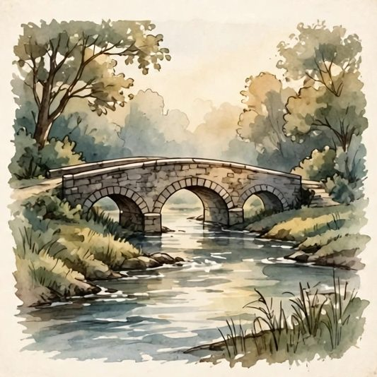
A bridge without a toll house. The crossing was paid for long ago, by having lived.
The cruelest toll in the geography of return is the belief that the way back must be earned — that the returner must arrive with winnings, apologies, or a story that justifies the whole expedition, as toll for the bridge. Under this belief, people circle the far shore for years, accumulating the price of a crossing that was never actually tolled. The bridge-keepers exist mostly in the traveler's head, and they accept, in the end, a currency of pure fiction: the traveler's shame.
Let the record of this estate be plain, for whoever needs to read it at the far shore: nobody has to earn the way back. The way back is a road, and roads are for walking. The winnings are welcome and the stories will be enjoyed, but they are cargo, not toll. The person who returns with empty hands and a full heart crosses free, same as anyone.
This applies, the hall notes in closing, to more bridges than the geographic kind. The way back to a person, to a practice, to a version of oneself left in a hurry — all these crossings collect the same imaginary toll, and all of them waive it under the same rule: your reason is your passage. State it, and walk. The bridge has heard every reason there is. It has never once asked for a better one.
72The Threshold, Crossed Twice
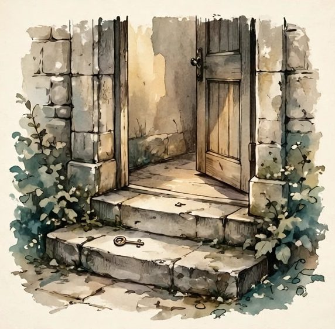
One threshold stone, worn by two crossings in opposite directions.
The threshold, crossed twice, is a different object from the threshold crossed once. The first crossing is an event; the second is the beginning of a pattern, and patterns are what lives are actually made of. The citizen who has left and returned knows something the never-left and the never-returned cannot: that the door is a door, in both directions, forever — and this knowledge, once earned, quietly abolishes whole categories of fear.
For the fear was never really of the far place. It was of irreversibility — the suspicion that each choice closes the world a little, that the doors lock behind, that a life is a corridor of diminishing options. The second crossing disproves it in the only convincing way: by demonstration. Options do not only diminish. They also recur, ripen, and reopen, and some of the best doors in a life are the ones approached the second time, with knowledge.
So the hall of Leaving & Returning closes with the estate's blessing on the traffic itself. Go out for any reason. Come back for any reason. The threshold will bear the wear; thresholds are built for it, and the polish on this one's stone — worn by feet going both ways — is considered, in this estate, the finest finish a door can have.
73Help Offered Before It Is Asked For
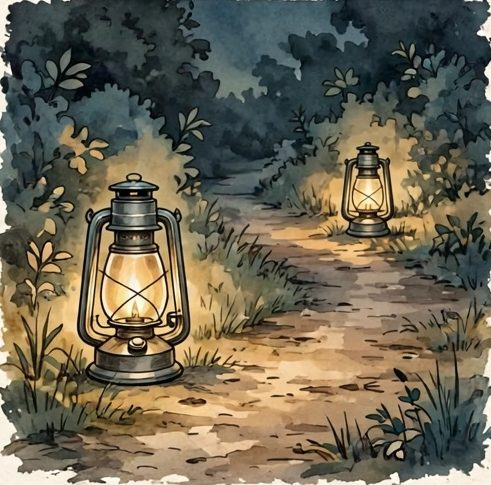
Two lanterns on one path. The first was lit before anyone asked for light.
The finest help in the register arrived before it was requested. The neighbor who appears with the ladder as the gutter is being contemplated; the friend who sends the article the week before the application; the meal that materializes in the hard season without a card explaining it. Help offered before it is asked for has a special property: it costs the receiver no courage. The whole tax of asking — the rehearsal, the exposure — is waived by the giver's timing.
This is a learnable art, and its curriculum is attention. The preemptive helper is not psychic; they are simply watching the same world everyone else watches, with the sound turned up. They notice the gutter, the deadline, the new baby, the old parent, the silence where a voice used to be in the group conversation. Most help is not withheld out of unkindness. It is withheld out of inattention, which is curable.
The standing rule applies to givers with the same generosity it applies to askers: offer for any reason, including none larger than I noticed, and I could. The offer does not need to be certain of its welcome — that is what makes it an offer. And on the receiving side, when such help arrives, the register teaches one response, in full: thank you. The analysis of whether it was deserved can be filed, permanently, under doors that do not need opening.
74Help for Any Reason, Including None Stated
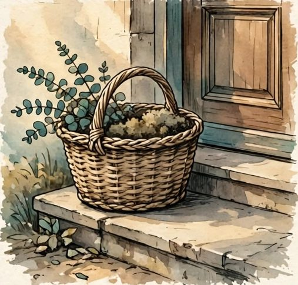
A basket on a doorstep. No note, no invoice, no occasion.
The register's most liberating column is this one: help given for any reason, including none stated. Not for an emergency, not for a celebration, not because the accounts of friendship required balancing — because the giver felt like it, on a weekday, in passing. This is help in its free state, unhooked from occasion, and it has a lightness that occasion-help cannot match: it proves, by existing, that the network is alive between the emergencies.
We are trained to suspect unoccasioned generosity — to look for the invoice in the basket. The training is understandable and mostly wrong. The ordinary truth is simpler and more durable: giving feels good to the giver in a way that keeping does not, and people who have discovered this do it the way they take walks — for the walk's sake. The basket is not a down payment. It is a walk, with fruit.
Receiving such help is the advanced exercise. It requires believing the basket theory over the invoice theory, which many of us can only manage by remembering our own unoccasioned givings and how little we expected from them. Accept in the same spirit. The network of help, like any living net, is held together not by knots of debt but by the simple fact that everyone in it has, at some point, left something on a doorstep and walked on, lighter.
75Receiving Is Also a Skill
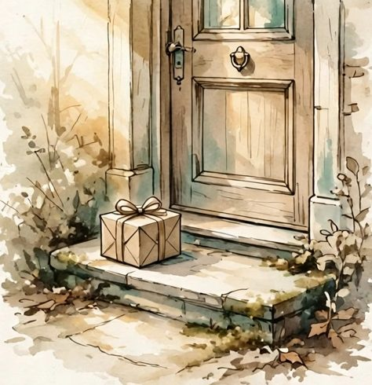
A gift set down and taken up in the same quiet motion. Receiving is the rarer art.
Asking has its hall; receiving deserves its own room, because they are different skills and the second is rarer. The receiver's art is mostly subtraction: do not deflect, do not instantly reciprocate, do not narrate how little you deserve it, do not seize the help and convert it, on the spot, into an anxious project of repayment. Receive it the way ground receives rain — by being there, and letting it count.
Behind the difficulty is a piece of old arithmetic: we would rather be owed than owe. The giver holds the honored position; the receiver, the exposed one. So we rush to reverse the polarity — the immediate return invitation, the favor doubled — not from gratitude, which is slower and quieter, but from discomfort at being, for one moment, the person who needed. The register notes that the discomfort is not humility. It is pride, wearing humility's coat, and it robs the giver of the completion of their act.
The practice, then: let the help land. Say what is true — that it was needed, that it helps, that you are grateful — and let the moment close at its natural length. The account is not unbalanced. It is balanced in a currency the anxious arithmetic cannot read: two people now know, with evidence, that help moves between them. That knowledge is the treasure. It compounds quietly for the rest of the acquaintance.
The Any-Reason Desk
One desk receives all correspondence for this house — questions, corrections, greetings, and reasons of any size. It is read in the order it arrives.
76The Small Help That Lands
A ladder, left leaning where it is needed. It will be collected whenever.
Against the folklore of the grand rescue, this room files the counter-evidence: the small help that lands. The ride to the station that saves the connection. The twenty minutes of experienced eyes on the terrifying form. The introduction made in one sentence. Small helps have a property the grand ones lack — they fit precisely into the gap that actually exists, which is almost never the size of a rescue. It is the size of a ladder, a ladder being exactly what was missing.
The register has audited lifetimes of these and found a pattern worth engraving: people remember the small helps longest. The grand crisis blurs with time; what remains in focus, forty years on, is the neighbor's porch light, the colleague's spare charger, the exact sentence a stranger said at the exact right counter. Small help is remembered at the resolution of poetry. Grand help is remembered as weather.
So the estate's counsel to its helpers is to stop waiting for a worthy scale. The worthy scale is here, daily, at the size of actual gaps. Carry the small help the way one carries the pocketful of reasons — ready, unceremonious, sized to the real. And to receivers, the matching counsel: let the small help count as the large thing it secretly is. The ladder is not a lesser rescue. On most days, it is the rescue.
77Help Without a Ledger
An untied gift. The string is kept; the score is not.
Help without a ledger is the estate's preferred banking: deposits unrecorded, withdrawals unitemized, no statements issued. It sounds like financial anarchy, and it is, in the small jurisdiction where it operates — the jurisdiction of people who intend to go on knowing each other. In that jurisdiction, the ledger is not security. It is corrosion. The friendship that must be balanced monthly will be audited eventually by someone tired, and audits end things that love would have carried easily.
This is not a counsel to be careless about fairness. Patterns matter: the one who always takes and never gives is not practicing ledger-free help, they are practicing extraction, and the difference is visible from space. Ledger-free means the accounts are kept the way healthy families keep them — roughly, generously, in the long view, with entire categories (meals, rides, listening) permanently exempt from counting.
The freedom this buys is difficult to overstate. Help that is not recorded can be given at the speed of noticing, which is the speed at which most real needs expire. No approval, no reciprocity forecast, no thought of the optics. Just the ladder, carried across the yard, while the need still exists. The register's books, audited across many years of this anarchy, show the network richer than any ledgered version of it ever managed to be.
78Ask the Neighbor, Ask the Stranger
Concentric paths in the dust: family, friends, and the stranger at the widest circle.
There is a map of help that everyone carries and few examine: the concentric circles — family, friends, colleagues, the known — with help flowing, supposedly, only inward across the rings. The map is wrong in an interesting way. Some of the most consequential help in any life crosses the outer rings: the stranger at the counter, the neighbor two doors down whose name was learned the day the pipe burst, the near-anonymous kindness that expects no continuation and therefore asks for no courage at all.
Neighbors and strangers hold a special license under the standing rule. The ask to them can be small and entirely unadorned, because no history needs managing — no debt dynamics, no image to protect, no fear of being reclassified in their eyes. You are, to them, simply a person with a stuck drawer, and they are simply a person with a free hand. The transaction is clean in a way that intimate help rarely manages.
So the estate teaches its citizens to keep the outer rings in repair: learn the neighbors' names before the pipe bursts; be, to strangers, the kind of stranger your own files record gratefully. The circles are not walls. They are a description of distance, and distance, in a network that helps for any reason, is just a measure of how far the ladder has to be carried.
79Help That Does Not Announce Itself
An umbrella over a doorstep in the rain. Somebody thought of the packages, and of you.
The most elegant help in the register is the kind that never introduces itself. The umbrella left over the doorstep packages. The path quietly cleared before the icy morning. The task done in the night by a colleague who left no signature, so that the morning crew found the road simply open. Anonymous help has a purity the other kinds cannot claim: it cannot be repaid, so it cannot be debt; it cannot be thanked, so it cannot be vanity. It is help in the state of grace.
Its practical effects are larger than its poetry. A workplace, a building, a family in which unsigned help circulates develops a particular atmosphere — a sense that the environment itself is benign, that problems dissolve slightly overnight, that one is upheld by the building as much as by any person in it. Morale, the auditors call it, and consistently fail to price it, because its supply line is invisible by design.
The standing rule licenses it without paperwork: do the quiet thing, for any reason, and leave no note. The register keeps a drawer for reports of such help — received, never solved — and it is the thickest drawer in the desk. On difficult days the Keeper opens it and reads. The entries have no names in them, which the Keeper maintains is exactly why they work as medicine.
80The Helper Needs Reasons Too
The lamp room, tools laid out in order. Those who keep the light also need rest, oil, and company.
A word of justice for the helpers, who are usually cast in these halls as the strong bank of the river. Helpers need reasons too — and rest, and help, and the same permissions as everyone else, issued in the same denominations. The chronic helper who cannot receive is not a saint of the network; they are a structural risk to it, because networks held up by one unreceiving pillar fall when the pillar finally does what unthanked pillars do.
The register therefore audits its strong citizens with special care, looking for the tell-tale entries: help given weekly, help received never. To such a one the desk sends its most respectful intervention, which is a question: who has your ladder, friend? The helper's reasons — I am fine, I like being needed, asking is not my way — are recorded faithfully and then, with love, overruled by the principle itself: for any reason applies to the strong. Receive something. Begin anywhere. Begin small.
There is a deeper point here, and it closes the room. A network in which help flows in one direction is not a network; it is a hierarchy with good public relations. The estate's help flows in circles, or it does not flow for long. The helper who learns to receive completes the circuit — and discovers, usually with astonishment, that the receiving was the missing half of the helping all along.
81When Help Is Refused, Kindly
A loaf set down gently where it was declined. No offense kept.
It will happen, in any honest network, that help is offered and declined. The decline arrives in many costumes — I am fine, it was nothing, you would have done the same misdirected at the wrong party — and the helper stands with their ladder in the rain, unexpectedly close to embarrassment. This room exists to say, on behalf of the estate: a kind refusal of help is a complete transaction, not a failed one. The offer was the help, in large part. It said the network is alive. The refusal says it is trusted to be there when wanted. Both statements are worth having on file.
Behind clumsy refusals there is usually a real boundary — a person protecting the last private room, or rehearsing a self-reliance they need for reasons of their own biography. The helper's art is to leave the ladder accessible without leaving it accusing: no sulking, no itemized sorrow, no doorstep speeches. Help that cannot survive a no was never entirely help; it was partly a bid for position. The register can tell the difference, and so, with practice, can everyone.
And the door discipline applies as always: the refused offer is not withdrawn from the world, only from that threshold, for now. Seasons rotate the roles with perfect impartiality. The refuser of spring is the asker of autumn, often at the same door, and the memory of a gracefully accepted no is what makes the later ask light enough to lift. Kindness, in both directions, is the network's true currency — the help itself is just its most visible denomination.
82A Network of Small Rescues
A net between posts, mended in many places. It holds because it is used, not despite it.
Zoom out from the single rescue and the pattern appears: a network of small rescues, woven over years, invisible in fair weather. The ride, the meal, the spare room, the timely loan of tools or courage — no strand of it could hold a falling life alone, and the whole of it holds falling lives regularly, the way a net holds what no single rope could. This is the actual social safety structure of most human lives, far below the altitude of institutions. It is maintained by hand.
The net's properties repay study. It is strong exactly where it is used often, and frays where it is only admired. It repairs itself when its members practice on small emergencies, the way muscles keep their readiness. And it has a distinctive failure mode: not malice, but embarrassment — the season when everyone in the net simultaneously decides that their need is not large enough to trouble it. Whole nets have starved in perfect politeness while every member waited for a worthier crisis.
The standing rule is the net's maintenance manual. Use it for any reason — that is what keeps it a net rather than a monument. Ask early, ask small, give before asked, receive without theater, refuse without rupture. The register's oldest entry is a note in the Keeper's hand: the net held again today, it says. It held because somebody pulled on it for an ordinary reason, on an ordinary day, and found — as the net intends — that it was there.
83Help Is a Form of Correspondence
A letter being written, candle lit. All correspondence is help that has learned to travel.
Strip the ceremony from it and help is correspondence: a message passed along the line that says, in effect, I have something you need — an hour, a fact, a hand, a key. The letter written to the struggling friend, the note left with the meal, the message that arrives in the bad week containing nothing but steadiness — these are not decorations on the network. They are its long-distance service, the means by which help crosses the distances that ladders cannot.
This is worth saying plainly because the estate lives by correspondence. Its citizens are scattered across time zones and circumstances; its desk answers in writing; its register is a book. When the help cannot be a presence, it becomes a text — and texts have their own powers: they can be re-read at 3 a.m., carried in a pocket, kept for forty years in a drawer and still work when taken out. No casserole has ever done that.
So the hall of Help ends at the desk, with a practical suggestion. The correspondence you owe — the reply, the check-in, the introduction promised in a hallway — is help, pending. Send it for any reason, at any size, without waiting for the occasion that would dignify it. Somewhere down the line a person is standing at a window of their life, and your three sentences are the weather they are watching for.
84The Standing Offer
One chair kept empty by the desk, for the offer that never expires.
Every hall of this estate keeps one chair for the sentence that summarizes it, and the sentence of this hall is the standing offer. It is what the network, at its best, manages to say to each of its members continuously, without banners: whatever it is, whenever it is, the door is staffed. Not a rescue service. Not an emergency line. A standing offer — help, available for any reason, at the ordinary temperature of a weekday.
Standing offers are rare because they are expensive in a currency no one budgets: attention held in reserve. The inviter must mean it on the tired days too. The holder of a standing offer lives slightly more interruptible than other people, and the register does not hide the cost; it records, beside the offers, the other entry — the offerer's own standing permission to rest, refuse, and receive, covered in this hall's earlier rooms. The system is fair. It is fair by design, or it collapses.
If you keep no other sentence from this hall, the Keeper suggests this one, to be said to the people in your net at whatever interval your courage allows: the offer stands. Three words, no expiry, no conditions annexed. Behind them, kept in good order, the whole architecture of this page: the keys, the doors, the pocketful of reasons. The next hall opens onto the workshop, where the same principle picks up its tools.
85Build It Because It Should Exist
A frame going up against the morning. It had one justification, and it was sufficient.
Some things are built because a market requests them, and some because a committee approves them, and the best of them — the register is not neutral on this — are built because someone looked at the empty place where the thing should be and heard themselves say: it should exist. This is the maker's oldest reason, and it is self-certifying. It does not poll the neighborhood. It does not wait for the trend. The shed, the song, the tool, the page — each begins as an act of jurisdiction over a small piece of the world's unfinishedness.
Because it should exist is a complete specification for starting and a surprisingly good one for continuing. It answers the 3 a.m. question — why am I still doing this — with the same sentence that started the thing, unamended. It survives the absence of applause, because applause was never in the specification. And it ages well: the maker, reviewing the work at a distance of years, finds the original reason still legible in the grain, like a date carved in a beam.
The standing rule is this room's foundation, as it is every room's. Build for any reason — but notice that the reasons of makers have a distinctive honesty. Nobody builds a boat because of a committee. They build it because the water is there and their hands know things their mouths have not learned to say. The estate registers such reasons in its best ink. They tend to float.
86The Project with One Justification
One candle, one table, one drawing. The staff of the project is present in full.
Most enduring things in the register began as projects with one justification, held by one person, indefensible at parties. The collection of local songs. The archive of the neighborhood's photographs. The translation nobody commissioned. Asked to justify itself at scale, the project would fail every audit the modern world runs — no demand curve, no growth story, no exit. It has, instead, a person who returns to it on ordinary evenings, which has proven, across the centuries, to be the more reliable institution.
The single justification has a structural advantage that portfolios lack: it cannot be diluted. A project justified by six stakeholders dies when any three lose interest. A project justified by one person's continuing reason survives every recession of fashion, because its entire board of directors is present whenever that person sits down at the table. The quorum is one, and the one keeps showing up.
There is a corollary for the tempted: if your project currently has no justification beyond the one in your chest, it is not under-justified. It is classically justified, in the manner of most of the contents of every museum and library on earth. State the reason at its true size, keep the candle lit, and let the auditors audit something else. The register will take the minutes.
87Work That Earns Nothing but Meaning
A garden tended at dawn, its harvest measured in mornings, not money.
There is a kind of work the accountants cannot see, though it fills the world: work that earns nothing but meaning. The garden tended past any question of groceries. The family history compiled for an audience of descendants not yet born. The craft practiced to a standard no customer will ever inspect. The modern ear, trained to hear earn as the verb that validates all others, files this work under hobby — a word that means, roughly, forgiven uselessness.
The estate files it differently: under load-bearing. Meaning is not the decoration on a life; it is the structure. The work that earns it is maintaining the beams. A person whose days contain only compensated effort is in the position of a house wired for power but never lit — every circuit correct, every room dark. The meaningless-earning work pays the bills of the soul, and its payroll, examined honestly, is the one most of us would refuse to cut.
So this room honors the unpaid masterpiece and the unmonetized devotion without a single qualifying clause. Do it for any reason — because your grandmother did it, because the standard exists, because Saturday. The register does not ask the work to convert itself into a livelihood before it may be taken seriously. Some things are the livelihood. The money work is what one does to protect them, and everyone who keeps both knows which is which.
88Making as a Way of Thinking
A wheel mid-turn, a pot rising. Thinking, conducted at hand speed.
Making is a way of thinking that bypasses the committee entirely. The hands interrogate the material — the clay, the timber, the sentence, the code — and the material answers in a language of resistance and give that no amount of theorizing can simulate. Many problems that refuse to be solved in the head dissolve at the bench, not because the bench is magic but because the bench holds better information: real, immediate, unarguable.
This is why the estate insists that its citizens make things, in whatever medium their lives allow. A citizen who only deliberates is running one instrument. The maker runs two, and the second one — the workshop instrument — regularly reports what the first could not see: that the joint was the problem, that the third paragraph wanted to be the first, that the plan was sound and the fear was weather.
Begin the making for any reason, and especially for the reason that thinking has stalled. When the mind has circled the question a dozen times, the instruction of this room is ancient and reliable: go and make the smallest version of the thing. The small version will argue with you productively. It will lose some arguments and win the important ones, and the big version, when its time comes, will be built by a person who has already had the real conversation — with the material, in the workshop, at hand speed.
89The Workshop Shelf of Unreasonable Things
A shelf of beautiful impracticalities. Each one is somebody's whole argument.
Every serious workshop keeps a shelf that defies the auditors: the beautiful tool for a job that comes once a decade, the model of the unbuilt bridge, the instrument whose music exists for one room. Visitors ask what these are for, and the honest answer — for themselves — is the most subversive sentence in the economics of making. The shelf is the workshop's proof that its owner works for reasons, and not only for outcomes.
Unreasonable things are the research department of a life. The telescope bought for no program, the language learned for no journey, the technique perfected past all utility — these look like waste until the day the world shifts and the unreasonable thing is suddenly the only relevant thing in the building. Portfolios cannot predict which shelf item will matter. The shelf is precisely the refusal to predict — curiosity, given storage space.
So keep a shelf, and stock it without apology. The standing rule is generous here: acquire, learn, and build the unreasonable thing for any reason, at its true size, which is usually smaller than its reputation. The register has seen enough decades to file this prediction with confidence: the shelf will be raided, someday, by a future you cannot currently imagine — and on that day the unreasonable things will be carried down like treasures, which is what they were all along.
90Finish Small Things
A letter written, sealed, and actually sent. Small game, finished.
Finishing is a skill, and like most skills it is trained on small game. The drawer of almost-done things — the letter written but unsent, the project at ninety percent, the repair awaiting one screw — is the maker's equivalent of the asker's corridor: a place where excellent work goes to be permanently nearly. The tragedy is one of scale. Ninety percent of a thing delivers roughly zero percent of its use. The last small stretch is where all the value lives, and it is the stretch the reasons mysteriously desert.
They desert because the last stretch offers no new pleasure of beginning — only the plain labor of completion, which must be fueled by a decision rather than a spark. The estate's counsel is to keep a special small reason in the pocket for exactly this terrain: finish it because it is finishable today. Because the screw is in the drawer. Because the envelope is already addressed. Small finishes, deliberately chosen, train the hand that the large finishes will need.
And there is a harvest in it that beginners do not expect: finished small things change the weather of a workshop. Each one cleared returns a unit of self-trust, spendable on the next beginning. The maker who finishes small things weekly finds, at the year's end, that they have quietly become the kind of person who finishes — an identity no single grand completion could have conferred. The register enters identity as the compound interest of completions.
The Any-Reason Desk
One desk receives all correspondence for this house — questions, corrections, greetings, and reasons of any size. It is read in the order it arrives.
91A Reason Is Enough of a Mandate
A seal pressed into wax. The mandate was never going to arrive by post.
There is a document many makers wait for that does not exist: the mandate — the official instruction, from the authorized body, to make the thing. Without it, the work feels presumptuous, as if songs and sheds and systems required a permit from a ministry of significance. The wait can consume the best working years, and it ends, when it ends, in the discovery recorded in this room: the ministry is unstaffed, the permit office is a painted backdrop, and the mandate was always going to have to be self-issued.
A reason is enough of a mandate. The sentence deserves its plainness. The person who has a reason to make the thing, and the hands, and the hour, has everything the ministry would have stamped. History's workshops were not opened by the mandated; they were opened by the reasoned — people who treated their own because as sufficient authorization and got on with it, leaving the paperwork to be invented later by admirers.
So press your own seal. State the reason, date it, and file it where you file important things — this is not a metaphor the estate is shy about; several citizens keep an actual page, signed, in the workshop drawer, and report that it works on the doubtful days with embarrassing reliability. The mandate problem was never legal. It was ceremonial. Supply the ceremony yourself, briefly, and then make the thing.
92Useless, Beautiful, Kept
A terrarium on the sill, thriving under glass. Kept is a category of value.
Useless, beautiful, kept: the three adjectives form a complete defense in the courts of this estate. The object that does nothing, delights the eye, and is kept across decades against all logic of storage is not a failure of minimalism. It is a citizen's proof that their economy contains a category beyond utility — the category in which most of what makes life recognizable actually resides. Remove everything useless and beautiful from a house and what remains is a warehouse with a bed.
The kept thing also carries time in a way useful things cannot. The tool is replaced when it dulls; the beloved useless thing is carried from house to house, wrapped, at real cost, precisely because its uselessness means its value was never in question — it is kept for love, which is the one appraisal that never fluctuates. Grandparents' houses are full of such ballast, and grandchildren fight over it, correctly understanding its worth at a level below argument.
So the register instructs its makers: now and then, deliberately, make the useless beautiful thing. The carved bird, the illuminated initial, the bench for a view nobody else has found. Make it for any reason. Such things are the estate's true currency in the long run — the pieces that survive the useful world and testify, to whoever finds them, that the makers were not only solving problems. They were keeping a world worth solving problems in.
93Work Done at Walking Pace
A path at walking pace — three miles an hour's worth of seeing everything.
Walking pace is roughly three miles an hour, and it is the speed at which the human animal was designed to perceive. At walking pace, the world is legible: faces can be read, weather can be felt arriving, the signposts of the inner life can be noted as they pass. Much modern work is done at a speed that forfeits exactly this legibility, and the results show it — projects that arrive on schedule at destinations nobody remembers choosing.
Work done at walking pace is not slow work; it is perceived work. The maker at walking pace notices the joint is wrong in the morning, not at the inspection. Notices the paragraph has lost its thread while it can still be called back. Notices, above all, whether the work is still the work they meant — the question that speed exists, often, to prevent. The estate keeps its production at this pace on principle, and its archives show no evidence that the principle has ever made anything worse.
There is also mercy in it. Walking pace can be sustained for a lifetime, in a body, without the body's eventual veto. The sprint is a loan taken against the future self; walking pace is cash. Work meant to last decades — and the register is full of such work — must be financed at the pace that decades allow. Begin for any reason, proceed at walking pace, and let the sprinters pass. The road, as an earlier hall observed, keeps.
94The Maker's Right to Change Direction
A compass beside a half-folded map. Direction is a draft, revised by walking.
Somewhere in the mythology of making there is a figure who never changes direction — who sets the course in youth and walks it, granite-jawed, to the monument. The register has searched its files for this figure and reports, with respect, that he does not appear. What appears instead, in file after file, is the turn: the project that became its opposite, the craft abandoned for its cousin, the life's work that was the third life's work attempted. The turns are not the failures of the story. They are the story, in its working clothes.
The maker's right to change direction is the workshop form of the principle: the reason that launched the work does not own the work forever. Reasons themselves change — ripen, sour, get replaced by better information — and the maker who cannot turn is not loyal; they are merely afraid of the corridor talk, which will call the turn a quitting. Let it. The register distinguishes cleanly: quitting is stopping. Turning is continuing, by a better road.
Practical counsel, since this hall prefers it: turn in the open, note the reason for the turn in the same register that held the reason for the start, and carry the materials across — almost nothing learned is wasted at the new bench. The map gets redrawn at every turn, which is what maps are for. The compass, meanwhile, keeps the only promise it ever made: not the destination, but the direction of north, by which all honest turns are navigated.
95Leave the Workshop Door Open
The workshop door at dusk, light spilling out. It is left open on purpose.
The workshop door, at the end of the working day, presents a small decision that reveals the maker's whole philosophy: shut it tight against the world, or leave it open — to the neighbor who needs the saw, to the young person circling the trade, to the possibility that the work improves by being interruptible. The estate's workshops, by standing instruction, leave it open. The reasons are practical and they are not: practical, because open doors built every network this page has praised; not, because a lit workshop at dusk is one of the world's reliable beauties, and the makers know it.
Open does not mean undefended. The maker's hours, standards, and refusals remain their own — an earlier hall built those walls. The open door is about what the workshop is for. A craft hoarded becomes a secret, and secrets depreciate. A craft shared becomes a school, and schools appreciate forever. The maker who teaches the grip, lends the tool, and shows the failed attempts along with the successes is not diluting their mastery. They are converting it into the only currency that survives them.
So leave it open, for any reason — for the company, for the light it spills, for the chance that the person who wanders in is carrying the question your next decade will answer. The hall of Work & Making ends with the door ajar and the bench swept. Next come the steps themselves, laid out plainly, for whoever is ready to walk a reason from its first noticing to its final entry in the register.
96What Gets Built Outlasts the Reason
A small stone house, standing long after its builder's reasons have weathered away.
A final accounting for this hall, and it is the most hopeful arithmetic the estate owns. Reasons are perishable — they ripen, they are spent, they are replaced. But what gets built on a reason is not perishable at the same rate. The shed outlasts the whim that framed it. The book outlasts the mood that started it. The repaired friendship outlasts the apology's embarrassed afternoon by decades. Making is the technology by which temporary motives are converted into durable goods.
This conversion is the deep answer to the fear that small reasons are too frail to build on. The frailty is real, and irrelevant: scaffolding is frail too, and is removed when the building stands. The builder does not need the reason to be eternal. They need it to be true long enough to raise the frame. After that, the frame holds the reason's place in the world, and new reasons — maintenance, habitation, love — arrive to do the keeping.
So build, citizen, on the reason you have, at its true size, without waiting for a grander one to underwrite the work. The grand reasons are mostly built things themselves, seen from a distance. Up close, everything in the register began exactly as your project is beginning: someone, a reason, a first hour. The step-by-step hall is next. It assumes nothing more than that, because nothing more has ever been required.
97Step One: Notice the Reason
One stone in the stream, placed first. The crossing exists from this moment, partially.
Step One is noticing, and it is a step — not a preliminary, not a mood. The reason is almost never announced; it accumulates as a slight pressure, a recurring thought, a sentence that keeps surfacing in the shower and the stairwell. Noticing is the discipline of catching it before it dissolves: this, again, the mind says — and this time, the citizen writes it down, or says it aloud to the empty kitchen, which amounts to the same filing.
The unnoticed reason does not wait forever. It has a season, after which it goes back into the deep water and may not surface for years. This is the true mechanism behind most lost beginnings — not refusal, not refusal's cousin fear, but simple non-noticing, the reason having knocked at a house where nobody was listening. The estate's whole apparatus — the register, the desk, these halls — is a machine for noticing, scaled up.
So the first instruction of the practical hall is embarrassingly small: when the reason surfaces, mark it. A line in a notebook. A word in the margin of the day. The mark does not commit you; it informs the future that a reason was here, at this hour, in this weather. Everything else in the twelve steps is downstream of that mark. The crossing of any stream begins with noticing that the far bank exists and that the feet are, already, slightly wet.
98Step Two: Say It Plainly
A handbell on plain linen. Say it so it can be heard, first of all by you.
Step Two is saying it plainly — first to oneself, in words, out loud if the room allows. The unspoken reason has a fog's advantages: it can be all sizes at once, noble and trivial, brave and safe. Spoken, it must choose a size, and the choosing is the discipline. I want to learn the instrument because I heard it in a kitchen when I was nine. I want to leave because I am lonely in a house full of people. The sentences are plain to the point of nakedness, and they are, every time, a relief to have said.
Plainness is not confession; the saying can stay entirely private. The point is the difference between a reason that has been formulated and one that is still weather. Formulated reasons can be carried, examined, shrunk, shared, and — the next steps insist on this — checked. Weather can only be endured. The second step is the moment the reason becomes cargo instead of climate.
Keep the sentence short. The register's experience is that a true reason fits in one breath, and that any reason requiring a paragraph of qualifiers is actually several reasons negotiating, or one reason hiding. Say the one-breath version. There will be time for the footnotes later; the steps ahead need the headline, and the headline, said plainly, is almost always kinder than the fog was.
99Step Three: Check That It Harms No One
The one checkpoint on the road: a keeper, a lamp, a simple question asked early.
Step Three is the only checkpoint in the twelve, and the estate places it early on purpose: check that the reason harms no one. Not that it inconveniences no one — lives are inconveniencing by nature — but that its fulfillment does not require someone else's loss of safety, property, pledged word, or peace as an ingredient. The reason that needs a victim is not a key. It is a weapon drawn in the shape of one, and this page does not issue those.
The check is quick for the vast majority of reasons, which are innocent the way weather is innocent. It lengthens, rightly, for the reasons that spend other people: the departure that strands a dependent, the ambition that feeds on a colleague's credit, the rest that is only possible because someone else's rest was cancelled. These are not forbidden by the checkpoint. They are referred to the honest ledger — where the cost is named, priced in the open, and either accepted as unjustifiable or arranged to be borne fairly.
Notice what the checkpoint is not: it is not the committee back in session. It does not ask whether the reason is worthy, wise, timely, or approved. It asks the single question that separates freedom from license — is anyone's door being forced? No: proceed, with the page's full blessing. The blessing of the other eleven steps is for exactly the reasons that pass this one, which is to say, nearly all of yours.
100Step Four: Shrink It to a Doable Size
Stones in a row, each smaller than the last, until one fits a pocket.
Step Four is shrinking, and it is where most reasons are saved. The reason as first noticed tends to arrive at full scale: learn the language, change the life, fix the house, heal the family. Full-scale reasons are inspiring and inert — they cannot be started, only admired. The step consists of cutting the reason down, respectfully, until one piece of it fits inside this week, this budget of hours, this body's actual strength. Fluency becomes twenty words. The life-change becomes the first phone call. The house becomes the one leaking tap.
Shrinking is widely mistaken for surrender, and the mistake has a body count. The register is full of magnificent reasons that died at full scale, unstarted, while their shrunken cousins — the tap fixed, the twenty words learned — went on to become, by accumulation, the very cathedrals the magnificent reasons had only described. The cathedral is not the enemy of the stone. But only the stone can be carried, and only carried stones accumulate.
A technique, for the practical: shrink until the next action is slightly embarrassing in its smallness. That is usually the true size of a beginning. If the shrunken reason can be done today, it is correctly cut. And the offcut is not discarded — it goes back in the register, at full scale, as the heading under which the small pieces will be filed. The vision stays grand. The steps stay pocket-sized. That is the whole technology of this hall.
101Step Five: Tell One Person, or No One
A sealed envelope and an open one. Both are legitimate ways to carry a reason.
Step Five is the question of witnesses, and it is genuinely a question — the steps do not prescribe an answer. Some reasons strengthen when told: the told reason acquires a witness, and the witness, even a silent one, changes the reason's legal status in the soul from intention to undertaking. Other reasons are seedlings that daylight kills; they need the drawer, the sealed envelope, the season of being nobody's news. The citizen must judge which kind they are carrying, and the judgment itself is a skill the steps are training.
Telling one person is the usual prescription, and the choice of the one matters more than the telling. Choose the person who receives reasons the way the register does — recorded without ranking, held without theft. Not the enthusiast who will annex your project to their energy, nor the auditor who will immediately request the five-year plan. The friend who can say, good, I have written it down in my head, and mean that nothing further is owed. Such people are rare and are to be told, across a life, nearly everything.
And no one is a complete answer. The reason carried alone is not thereby suspect; some of the register's finest entries were disclosed only by their results, years later, to general astonishment. Tell one person, or no one. The step exists because the decision should be made on purpose — not defaulted into by shyness, nor out of by the noise of the age, which insists everything real be witnessed. Real things have survived unwitnessed for millennia. Some of them are in this book.
102Step Six: Set the Smallest Possible Start
The grand staircase, shrunk to a single first step anyone could take.
Step Six is where reasons go to be rescued from their own grandeur: set the smallest possible start. Not a small start — the smallest. The distinction is the whole step. A small start is twenty minutes of the language; the smallest possible start is opening the book. Small starts can still be negotiated with, postponed, and lost. The smallest start is beneath negotiation. It takes less time than the argument against it, which is the engineering trick: make the beginning cheaper than the resistance.
There is a physics to this that every maker learns. A body at rest and a body in motion are different problems, and the difference is not proportional to the push. The first centimeter is the expensive one; the kilometer is discounted. The smallest start buys the first centimeter at the lowest price it will ever be offered. After it — the book open, the shoe on, the file created — the citizen is a person in motion, and all subsequent steps are priced for motion.
So set it now, while the reason is still warm from Step Two's plain speaking: what is the version of beginning that takes under five minutes? Write it as an instruction a kind stranger could execute. Then the next step will tell you when to execute it, and the answer will be sooner than your feelings have budgeted for. They always budget late. It is one of their charms, and one of their defects, and the steps are designed around both.
103Step Seven: Begin Before the Feeling Arrives
A lantern set down at the path's beginning. The walker has already gone on ahead of the light.
Step Seven repeats the doctrine of an earlier hall in work clothes: begin before the feeling arrives. Motivation, where it exists, is a trailing indicator — the smoke of work already burning. The citizen who waits to feel like beginning has outsourced their start to a weather system that does not take requests. The steps are blunt about the alternative: start at the appointed smallness, at the appointed hour, feeling whatever is felt, and let the feeling file its own paperwork later.
What actually happens, attested by the whole register, is that the feeling arrives on schedule — roughly twenty minutes after the beginning, wearing the expression of someone who was always coming. The first minutes are done on credit, in a kind of gray obedience to the plan, and then the work takes hold and the credit is repaid with interest. Knowing this in advance does not make the gray minutes pleasant. It makes them legible: this is not the verdict on the project; this is the toll booth, and it is unmanned, and everyone passes.
So: begin before the feeling arrives, for any reason — including the reason that the feeling has kept you waiting at other doors, in other years, and the account is due. The lantern of Step Seven is lit at the path's beginning and then, the Keeper notes with approval, left behind. The walker walks on ahead of their own light. This is not recklessness. It is the oldest method of travel there is.
104Step Eight: Let It Be Imperfect in Public
A birdhouse, slightly crooked, hung with pride. The birds have filed no complaints.
Step Eight is the one the perfectionist citizens request be removed from the hall, and it is therefore retained in bold: let it be imperfect in public. The work that waits for privacy's polish usually waits forever, because the polish is never certified and the public — that terrifying jury — turns out, on inspection, to be a handful of distracted contemporaries with their own crooked birdhouses to hang. The step proposes the terrifying shortcut: hang yours, crooked, in view, and let the birds adjudicate. The birds, it develops, adjudicate on shelter, not on angles.
Imperfection in public does something privacy cannot: it recruits. The visible draft draws the experienced stranger's correction, the fellow beginner's courage, the collaborator who was waiting for exactly this quality of almost. Hidden work can only be admired after it is finished, which is to say, in most cases, never. Shown work enters the world's workshop, where the tools are shared and the advice, though mixed, is free.
So the eighth step gives the work its first airing at the stage the calendar suggests — not when it is ready, but when it is real. A real paragraph, a real prototype, a real first session: these are the currency. The register does not grade them. It records that they were shown, and dates the citizen's courage accordingly — which is to say, in its best ink, with the date underlined.
105Step Nine: Rest Without Cancelling
A hammock strung in the middle of the journey. The road waits; nothing is cancelled.
Step Nine arrives precisely where most sequences abandon their citizens: in the middle, when the beginning's novelty has burned off and the end is not yet visible, and the whole enterprise depends on the bleakest fuel there is — continuation. Here the instruction is rest, and it is not a concession. Rest without cancelling is the specific technology by which long works survive their makers' humanity. The project is not paused in shame. It is banked, deliberately, with a note on the door.
The distinction between banking and abandoning is the return arrangement: a date, a next smallest step, a thread left deliberately loose to pick up. The banked project waits like a sourdough starter in a cool place — alive, quiet, requiring almost nothing — and the citizen who learns this rhythm stops paying the twin taxes of guilt during rest and dread before restarting. Both taxes are repealed by the note on the door.
So schedule the rest as a step, not as a collapse between steps. The nine-step-deep citizen has earned the estate's central insight, and may as well hear it in this room: the sequence was never a sprint of twelve motions. It breathes — notice, speak, check, shrink, tell, start, begin, show, rest — and the breathing is not the interruption of the method. The breathing is the method, and the works that fill the register were all, without exception, breathed into existence.
The Any-Reason Desk
One desk receives all correspondence for this house — questions, corrections, greetings, and reasons of any size. It is read in the order it arrives.
106Step Ten: Change the Reason if the Reason Changes
A weather vane, mid-turn. The wind changed; the roof is not embarrassed.
Step Ten is the step that saves the sequence from becoming a cage: change the reason if the reason changes. Midway through the work, the original because often turns out to have been a draft — the stated motive replaced, by contact with reality, by the actual one. The loyalty that some citizens feel toward their first reason is touching and misplaced. The reason is scaffolding, as an earlier hall said of beginnings. It is not the building, and it does not need a memorial when it comes down.
Changing the reason mid-work is not hypocrisy; it is navigation. The sailor who set out for the spice islands and finds a continent does not owe the spice islands an apology. The writer who began in anger and continues in love is not a fraud; they are a person whose fuel improved. What the register asks is only honesty at the change: note the new reason with its date, the way the old one was noted, so that the file of the work remains true. The file matters. It is how the future reads the past without mythology.
There is a warning attached, and the step would be incomplete without it: a reason that changes weekly is not a reason but a weathervane without a roof. The test is cost. A real change of reason costs something — an admission, a redirection, work discarded. A fashionable change costs nothing and is weather. Change when the change is real. The vane turns because the wind turned. That is the entire etiquette, and it is enough.
107Step Eleven: Finish, or Lay It Down Gently
A small chair, finished, set by the window. The tools are resting too.
Step Eleven handles the ending, and it offers the citizen the full dignity of both doors: finish, or lay it down gently. Finishing needs no instruction by now — the sequence has been rehearsing it since the first stone. Laying down is the art this step exists to teach, because most endings in real life are layings-down, and they are done so badly — in disgust, in haste, in the middle of the night — that the work's whole value is thrown away with its carcass. A thing laid down gently keeps its value. It can be resumed, inherited, mined, or remembered accurately, and each of those is a kind of survival.
The gentle laying-down has a form, and the form is short: stop at a natural seam, not mid-tear; leave the notes a stranger would need, who is usually your future self; say the true sentence about why, at its true size; and close the door without slamming it — the doctrine of an earlier hall, applied to one's own departing traffic. The work is then filed, not failed. The register's word for it is complete-in-its-season, and the category is large and honorable.
Whichever door the citizen takes at this step, the principle holds to the end: the reason for stopping is subject to the same mercy as the reason for starting. Any reason, honestly held, suffices — including the quietest one in the register: it was enough. Some works are finished by being completed. Some are finished by being enough. The Keeper, who has filed both kinds, declines to rank them.
108Step Twelve: Write Down What the Reason Taught
The register, open at its last page, the lesson entered in a plain hand.
Step Twelve is the register itself: write down what the reason taught. The work may be finished or laid down; either way it has generated the one product that no outcome can devalue — knowledge of what this reason, followed honestly, actually does in the world. That knowledge is the estate's true treasury. Coins of it, filed by thousands of citizens, are what these halls were built from, and the twelfth step is how the treasury grows: each completed sequence pays its lesson in.
The writing need not be long. The register's best entries are three lines: the reason, the road, the residue. Began the garden for the light. Learned the seasons run the gardener. Keeping the tools. Future citizens, reading at their own thresholds, will not need your epic; they will need your three lines, which have the density of all honestly compressed things. Write them plainly, sign them with the date, and do not inflate the lesson to match the effort. Lessons are seeds. They travel best at seed size.
And then the sequence closes, as it must, by opening again. The citizen who has written the lesson has, by that act, noticed something new — a pressure, a recurring thought, a sentence surfacing in the stairwell. Step One is already standing there, patient as ever. The twelve steps are a wheel, not a ladder. The estate's citizens climb it their whole lives, and the view, they report, improves with every circuit.
109A Guide for the New Arrival
The guidepost at the path's start. It points into this page and, politely, out of it.
Welcome, new arrival. This guide assumes you have come to the last hall by one of the usual roads: you read from the beginning, you were sent here by a friend, or you landed in the middle of the page and walked backward, which the estate counts as a legitimate form of arrival. In any case, the essentials fit on one card. The principle: any honest reason is enough — to begin, ask, rest, leave, return, help, make, change your mind. The practice: notice the reason, say it plainly, check it harms no one, shrink it, and begin small. The building: these halls, a desk, a register.
You are not required to believe any of it in advance. The estate's preferred method of instruction is the trial: pick one door currently standing unopened in your life, apply the smallest version of the sequence, and file your own report. The report outranks this page. The page knows this and approves; a principle about self-issued permission that demanded belief in itself would be a small tyranny, and tyranny is the one architecture the estate has sworn off.
Practical notes, since guides should be practical: the desk — whose form appears throughout these halls — reads correspondence in the order it arrives and answers what it can. The plates on the walls are for pleasure. The doors are as they appear. Stay as long as the long view interests you, and leave for any reason, by any door, with the register's blessing and the standing invitation to return in the same manner.
110Questions People Ask at the Desk
The desk itself: ledger, lamp, a chair for the visitor. This is where the questions land.
The desk collects the questions, and in this room the Keeper answers the commonest of them, in the order of their asking. First: is this a philosophy or a permission slip? It is a practice, the desk answers, which is what philosophies become when they are carried in pockets and used at thresholds. The test of it is not argument. It is traffic — doors, opened, that were not opening before.
Second: what if my reason is selfish? Then it is a reason, the desk answers, and it passes the only checkpoint the sequence maintains if it harms no one. A life arranged entirely around other people's reasons is not selflessness; it is absence, and absences cannot help anyone. The self is one of the citizens. Its reasons are in the register with everyone else's, alphabetically, unranked.
Third, and asked most quietly: what if I begin and it changes nothing? Then, the desk answers, you will have a finished sequence and a three-line lesson, which is more than the corridor ever paid you. But the register's long experience suggests a different risk as the likelier one: that it will change something, and the something will have consequences, and the consequences will have doors. The desk smiles when it says this. It has filed too many beginnings to pretend otherwise.
111Questions Strangers Ask
A stranger at the gate with honest questions. The house is grateful for them.
Strangers ask different questions, and the estate is grateful for them; a principle that only satisfies its citizens is a club rule, not a principle. The stranger's first question is usually: who is in charge here? Nobody, the estate answers, in the way the stranger means. There is a desk, a keeper of the register, and a standing rule. The rule is in charge the way gravity is in charge — by being true for everyone who tests it, and by needing no enforcement arm.
The second question: is this not just an excuse for doing whatever you like? It is the opposite, the estate answers, and invites the stranger to inspect the machinery: a checkpoint that refuses reasons which harm, a register that insists on honesty about motives, a discipline of steps that begins with noticing and ends with accounting. Doing whatever you like requires none of this apparatus. This page exists because liking something is the start of an examination, not the end of one.
And the third question, which the Keeper likes best: does it work? The estate's answer is empirical and modest. The doors work. The rest is mileage, which varies by citizen and cannot be promised — and the fine print, two rooms along, will say exactly that in the formal language. Strangers are then offered tea. Strangers who stay for tea, the register notes, frequently become citizens, and their first entry is always the same: arrived as a skeptic; reason, curiosity. It is one of the accepted reasons. It is listed first in several of the hall's informal liturgies.
112What a Visitor May Take Home
Bread, seeds, a small key. Nothing here is heavy, and all of it is meant to be used.
Every estate decides what its visitors may take home, and the customs list of this one is short and generous. Take the rule, which is pocket-sized and was designed for travel. Take one step of the twelve — most visitors take Step Four, shrinking, though Step Nine, rest without cancelling, has its devoted smugglers. Take a three-line lesson format for your own register. Take, if you like, the memory of a plate on a wall. The estate's wealth is of the kind that increases by being carried away.
What may not be taken is equally definite: no one's obligations transfer. The visitor leaves with their own reasons, not the estate's instructions — the page issues no homework and recognizes no graduates. If a sentence from these halls follows you home and starts opening doors, that is not the page's authority at work. It is yours, recognizing its own signature on the permission slip at last.
So the register's farewell to the departing visitor is the one it gives its own citizens on any ordinary morning: go for any reason; the door you need is probably plainer than you think; write down what happens. And if the road bends back this way — the traffic statistics say it often does — the kettle in the first hall will be on, and no one will ask you to account for the journey. They will ask, at most, what it taught.
113A Life Arranged Around Small Permissions
A house of many lit windows. Each room was permitted separately; the light adds up.
Zoom out far enough and a life arranged around small permissions has a recognizable skyline. It is not the skyline of the monument builders — no single tower dominating. It is a neighborhood: many lit windows, each the result of a reason honored at its hour. A practice begun in a kitchen. A rest defended like a garden. A correspondence kept alive across an ocean of circumstance. From any distance, the pattern reads as warmth, and it is achieved the way warmth is always achieved — room by room, not by central heating of the soul.
The neighborhood's secret is that none of its windows required a master plan. Each was permitted separately, by the citizen, for a reason of the season. Master plans have their virtues, but they are brittle in one specific way: they expire when the planner does, or when the world declines to follow the plan. The neighborhood renews itself continuously, because every window is its own small permission, reissued daily by the person living behind it.
This is the estate's answer, offered in the long view, to the fear that any reason is a philosophy for drift. Drift is what happens when no reasons are honored, and the water decides. A life of honored reasons is the opposite of drift: it is navigation by a thousand small stars instead of one distant pole. The course looks wandering from above. From the helm, it is the straightest line the weather allowed, and the log — three lines at a time — proves it.
114The Principle in Ten Years
The same small door, ten years on, its path well-worn and its lamp replaced twice.
Project the principle forward ten years, in one citizen, and the register allows itself a forecast — modest, because forecasts are filed in pencil here. Year one: the doors begin opening — the asks made, the small starts started. Year three: the network effects arrive, as the citizen's asks and offers weave the net that earlier halls described. Year five: the register itself becomes interesting, a decade-scale document of what reasons actually did in one life. Year ten: the citizen is, to newcomers, simply a person whose life works — and asked for the secret, can only offer the pocket rule and the twelve steps, which will sound, as they sounded at first, too small.
The forecast for the estate is the same shape at larger scale. Ten years of citizens filing three-line lessons is a library of motive such as the world has not kept before: not what people achieved — the achievement libraries exist — but why they began, at true size, unedited. Such a library would be the estate's real monument, and it would be characteristically unmonumental: a room of small true sentences, indefinitely extensible, shelved alphabetically.
Whether that library ever stands is, the Keeper notes, not the principle's problem. The principle operates at the scale of one citizen and one door, and it will still be operating — in pockets, on Tuesdays, for any reason — in whatever year the reader is reading this. Projection is a pleasure of the long view. The work is, as always, at the nearest threshold, and it is refreshingly near.
115Failure Modes, Listed Calmly
Buoys in calm water. The hazards are known, marked, and rarely dramatic.
An honest estate lists its failure modes, and this principle has them, as any working thing does. First: the reason as anaesthetic — for any reason recited not to open doors but to forgive oneself for never approaching them. The phrase is not a sedative. If the pocket rule is producing no traffic, it is being misread, and the register's remedy is Step One, applied with a pencil: notice, in writing, for seven days. The traffic, or its absence, will become legible.
Second: the reason as crowbar — the checkpoint of Step Three evaded by rephrasing, harm dressed as preference. The estate is not naive about this; it is why the checkpoint exists and why it asks about ingredients rather than intentions. A reason that requires someone else's loss as a component is not repaired by being sincerely felt. Sincerity is required everywhere in this page and is sufficient nowhere by itself.
Third: the collection that becomes a hoard — reasons gathered, registered, framed, and never spent, the pocketful admired instead of used. This is the subtlest failure, because it looks like the practice from outside. The register's diagnostic is simple: reasons, like seeds and like money in the old parables, are known by their circulation. If yours are all still in the drawer, in mint condition, the drawer is not a treasury. It is a museum of unlived doors, and the estate — which loves museums — insists this is the one kind it refuses to keep.
116If This Page Is All That Remains
One page, framed. If it came to that, the page would argue it was enough.
Suppose the halls are lost — the platforms fold, the archive scatters, the desk's ledger is used to wrap fish in some future market. Suppose this page is all that remains, one screen of it, found by a stranger in a changed world. The estate has considered the scenario, as it considers all endings in its halls, and its assessment is calm: the page would be enough, because the page was never the point. The point fits in a sentence, and the sentence is built to survive the loss of its building.
This is the advantage of small doctrines. Empires of paper require their paper. A pocket rule requires a pocket. The stranger who finds the sentence — any honest reason is enough — needs no initiation, no apparatus, no returning institution to activate it. They need a door, and doors are among the most durable technologies ever made. The estate expects its principle to outlive its website by exactly the margin that sentences outlive servers, which history suggests is considerable.
So the fine print that follows can afford its honesty. This page claims no permanence for itself. It claims portability for its one idea, and files the claim with the same shrug it recommends for all large matters: we shall see. What remains after any fire, flood, or platform decision is what was carried out in pockets — and the estate has spent a hundred and fifteen rooms making sure the carrying is easy.
117A Note from the Keeper's Desk
The keeper's desk at evening: correspondence read, register kept, one note left personal.
A personal note, before the formalities, from the Keeper of the desk — the one who reads the correspondence and keeps the register in the handwriting visitors sometimes mistake for a style. The Keeper's observation, after years of filings, is simple and keeps surprising him: the reasons people apologize for are almost never the shameful ones, and the reasons people are proudest of are almost never the operative ones. The operative ones are plain. Because I wanted to. Because I was tired. Because it was Tuesday, because the light was good, because she asked, because the kettle was on. The register's whole wisdom is learning to read those sentences as the load-bearing walls they are.
The Keeper also wishes it recorded that the desk has never once received a reason too small to file. It has received reasons too tangled to read, and those were returned, kindly, with a request for the one-breath version. It has received reasons written in grief and in triumph and in the ordinary ink of Wednesday. All were entered. The register does not have a page of rejections. Its Keeper has checked, in idle moments, and the binding where such a page would be is uncut.
Write to the desk, then, if the walk through these halls has left you with something to say. The form appears throughout the page, as it appears throughout the estate, every fifteen rooms. Say it at its true size. The Keeper reads everything, answers what he can, and files the rest — under reasons, accepted, which is the largest file he keeps and, he reports, the one still growing fastest.
118Fine Print, Honestly
Reading glasses on a closed book. The small print is below; it is honest, as advertised.
The formalities, stated plainly, as this page promised in its first hall. For Any Reason is a concept page — a speculative project of Hi-Tech Limited Holding, set down as a design study and a working draft. It describes an estate of the imagination, a desk, and a register that exist chiefly as this document and whatever its readers do with it. It is not a company, not a service, not a school, and not an offer of any of those things.
Nothing on this page is for sale, and nothing on it should be read as a promise. There are no products here, no prices, no subscriptions, no outcomes guaranteed or implied — including the outcome of a happier life, which the principle may or may not deliver and which is, in any case, not the estate's to warrant. The doors depicted are metaphors that the estate believes in, which is a different thing from their being carpentry. Any citizen who walks through a real door on the strength of these halls does so on their own reason and their own responsibility, which is, as the first hall established, exactly where responsibility was always located.
Correspondence sent through the forms on this page goes to the Holding's desk and will be read with the same courtesy the halls describe. Personal circumstances shared there stay there. And this fine print itself is subject to the page's own rule: it was written for a reason — because honesty is the foundation the whole building stands on — and it is, the estate notes with satisfaction, a sufficient one.
119Last Light at the Threshold
Last light at a threshold, the door half open. The day is filed; the door keeps its own hours.
Evening in the estate is a modest ceremony. The desk is cleared, the register is closed on its ribbon, the day's filings — beginnings, asks, rests, returns, lessons of three lines — are left in their satisfying disarray of honest sizes. The Keeper walks the corridor once, not inspecting anything, just accompanying the day out. The doors, all of them, stand as their citizens left them: open, shut, ajar. The building does not grade its doors at night. It keeps them hinged.
Last light does something to thresholds that no other hour does: it makes them honest. In the full glare of noon a door can pretend to be a wall, or a wall a door. At dusk the outlines soften and the truth of each opening shows plainly — this one is used daily, this one waits, this one has been painted shut by seasons of nobody-trying. The Keeper's evening walk is partly for this light. He files his private notes by it, and they are among the register's most accurate pages.
If you have walked with him this far, the estate thanks you in its preferred manner: without ceremony, and with an observation. You now know where every door in the building is, including the small one marked with your own reason, which was installed while you were reading. It is in the next room of your actual life. The light, this evening, is good. That is not a metaphor the estate uses lightly, and it has never yet been an insufficient reason.
120The Door, Left Open
The last door of the house, seen from inside, standing open on the dawn.
The last room is the first door, seen from the other side. Everything the halls have said is behind you now — the principle, the small reasons, the asks, the beginnings, the rests, the crossings both ways, the help, the making, the steps, the long view — and ahead of you is the ordinary world with its ordinary doors, which is where this page always intended to deliver you. It has no further exhibits. It has a threshold, and a preference, which it will state once more and then stop.
The preference is that the door be left open. Not propped with doctrine, not guarded by the register, not admired as a symbol — simply left open, the way one leaves a door for the cat, for the breeze, for the person who will arrive later with their hands full, for no stated reason and every unstated one. An open door is the estate's whole flag. It does not insist. It admits.
So the page ends, as the estate's pages end, with the lamps being turned down and one light left on in the corridor — for the late reason, the returning citizen, the stranger reading at an odd hour in a far time zone. Whoever you are, and whatever brought you to the last room: it counts. It always counted. The door is yours, and it is open, and it will be open in the morning.
The Any-Reason Desk
One desk receives all correspondence for this house — questions, corrections, greetings, and reasons of any size. It is read in the order it arrives.